Thoughts on neuroscience, brain imaging, aging, technology, and the academic life.
June 16, 2026
brainWhiz: A Brain Viewer Cognitive Neuroscientists Can Actually Use
Every cognitive neuroscientist I know has the same complaint about brain visualization software. NiiVue and MRIcroGL are powerful but assume you already know the file formats, the coordinate systems, the affine matrices, the colormap conventions, and the difference between a parcellation and a probabilistic atlas. They are tools for people who already think like an imager. If you are a cognitive scientist who wants to ask "which ROI maps to working memory in this atlas, on a brain, right now," the answer is a 45-minute side quest.
brainWhiz is the visualizer for the other 95% of the field. It runs in the browser. It exploding-brains the atlas regions apart so you can see them. It looks up Neurosynth task associations on demand. It ships JHU (189 ROIs), Catani, Fox, AAL, AICHA, Brodmann out of the box. You pick an atlas, pick a task ("Motor", "Language", "Working memory"), and the brain colours itself. No file paths, no nibabel, no thinking about MNI vs native.
Try it
Drag to rotate. Pick an atlas in the sidebar. Slide the "explode" slider to fan the regions apart. Pick a task to colour by Neurosynth association. (The embed ships a subset of atlases - the full version has all six.)
Four panels generated from the live API
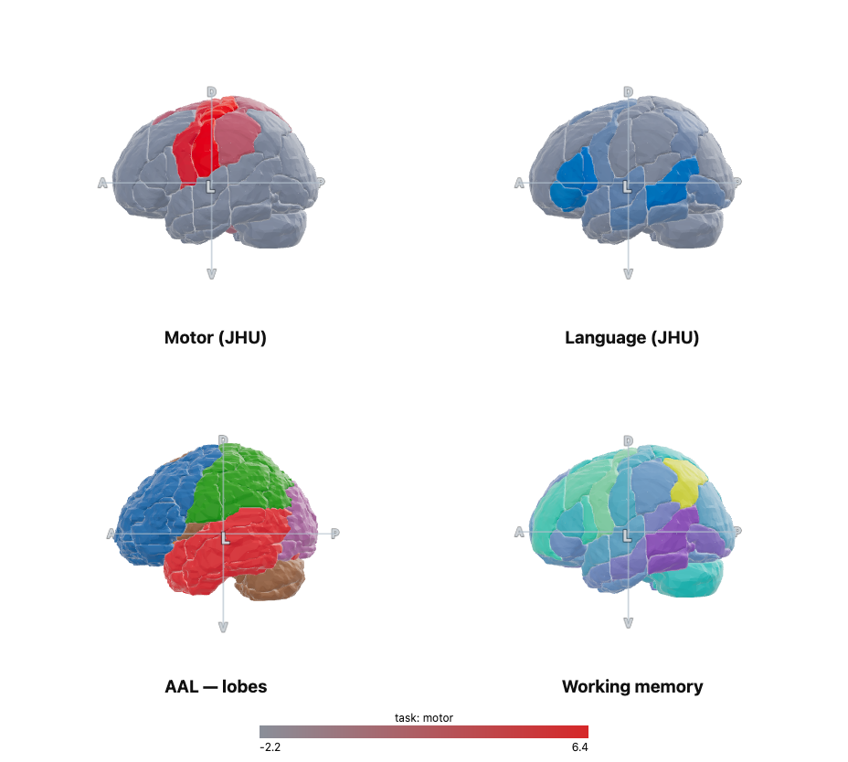
The figure above was generated by node make_figure.mjs figure_example.json - a separate headless figure-rendering pipeline that drives the same in-browser viewer via a WebSocket bridge. The point: everything you see interactively, you can render as a static PNG for a paper or grant figure, deterministically, with the same colourbar and the same camera angles. That's the publish-ready feature niche the heavyweight tools assume you'll handle yourself with a separate script.
The design philosophy
The opinionated bet is that cognitive neuroscientists need a tool that meets them where they are, not where the imaging core thinks they should be. Half the cognitive scientists I collaborate with are clinicians, linguists, or psychologists who use brain data but don't think in BIDS. The other half are students who haven't yet learned to. Both groups deserve a tool that doesn't punish them for not having the imaging background.
The same logic that drives the rest of my open-source pipeline (Brainchop, NiiVue contributions, ezBIDS): infrastructure is a research contribution. If you remove one friction point from a hundred labs' workflow, you have done a thing that matters. brainWhiz is the same bet at a different abstraction layer - the layer where the user wants to ask scientific questions, not configure software.
The eventual goal is to wire it directly into the patient-facing dashboards the C-STAR team has been building - so a clinician can pull up an aphasia patient's lesion and immediately see which atlas regions are affected, what tasks those regions tend to be involved in, and which other patients in the cohort share the profile. The visualizer is the glue between the data and the question.
June 15, 2026
Apple Kept Rejecting R.O.G.I.E. - So I Shipped It as a Web App
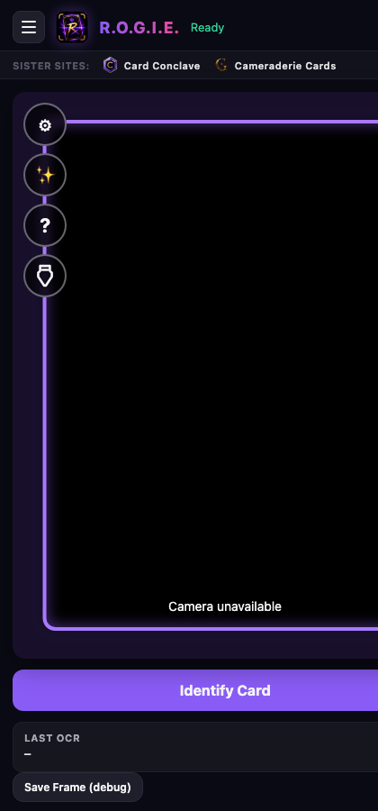
Several months and several App Store review cycles later: R.O.G.I.E. (the on-device MTG card identifier) was repeatedly rejected from the iOS App Store. The reasons varied each round - guideline 4.3 spurious-similarity, in-app purchase quibbles, "we'd like more information about what the app does" loops, demo-account requirements for a fully on-device tool that has no accounts. Each round of revisions took weeks and one more reviewer would find one more new reason. At some point the math stops working.
So I shipped the same app as a web app instead. Same model, same UX, runs in the browser, lives at rogiemtg.fly.dev (the cardcurve.com domain is the next move). One fly deploy from mtgIder/webapp/ instead of waiting on the App Store gatekeepers. Zero approval queue.
What you actually get
Real-time card identification from your phone's camera. Apple's Neural Engine isn't available in a browser - but ONNX Runtime + WebAssembly is, and a 5MB embedding model + 105k card fingerprints in IndexedDB runs identification in <500ms per scan on a recent iPhone.
100% on-device. The camera stream never leaves the browser. There is no backend. Caddy serves static files only; the "API" is a JSON blob of embeddings the client downloads once and caches forever.
Sister-site links to Card Conclave (the OneRing dashboard) and Cameraderie Cards. Click an identified card and it opens the verdict screen with all eight signals.
The cardcurve view
The "cardcurve" piece is a small but pleasing animation - a chart that shows the card's full price history as a curve, with past and future visually separated (past is cyan, future is magenta, current price the bright accent). I rebuilt it as a portrait-first iPhone-class layout because the phone is where this gets used. Identify a card, get a verdict, see the curve - one screen, one tap, no scrolling.
What the rejection saga taught me
Three things, mostly. (1) The App Store is a tax on disrespecting your timeline. If you can ship as a web app, your deploy loop is minutes instead of weeks. The native experience is nicer, but "nicer" loses to "exists" every time. (2) Web-tech has caught up enough that "on-device ML" doesn't require an App Store binary anymore. ONNX, WebGPU, WebAssembly, IndexedDB, and the Camera API together let you do almost everything you used to need a native app for. (3) The right framing for app-store-hostile projects is "the web is my distribution channel" - not "I'll get this through review eventually." Most users don't actually care which it is.
I still think the iOS version is worth shipping eventually because the camera UX is meaningfully better natively. But it's no longer the gating thing. The thing that matters - the actual identifier, the actual verdict pipeline - is live and you can hold it in your hand right now. That's the part I was actually trying to deliver.
June 14, 2026
LLM Aphasia Fingerprints: A Feasibility-First Methodology
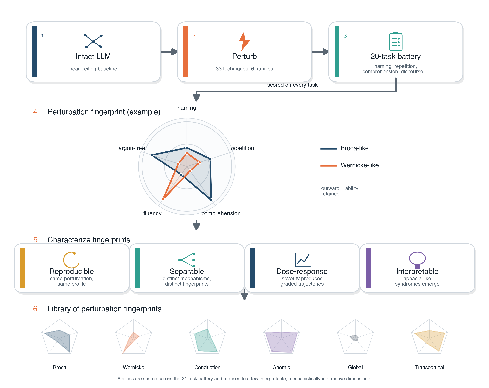
This week's paper draft is the methodological prequel to BLUM, FAULT, LMN, INFER, and PRISM. Each of those started from patient data and asked "can we configure a damaged LLM to match the error profile of patient X?" - usually on a single task (the Philadelphia Naming Test). The new paper deliberately inverts that dependency: it asks the prior, harder question first.
Do different model lesions, evaluated across a battery of language tasks, produce distinct and interpretable error fingerprints at all?
If the answer is no - if two random lesions look the same once you average over a 20-task battery, or if the same lesion produces different fingerprints across seeds - then patient matching is moot. You'd just be fitting noise.
Why the inversion is the contribution
Every previous LLM-aphasia paper has been patient-yoked: the patient data both motivates the experiment and validates the conclusion. The risk - explicitly flagged in INFER - is that a flexible enough perturbation manifold plus a low-dimensional error space will find some configuration that matches any patient. The match doesn't prove the mechanism is right; it proves the search space is large.
Phase 1 of this project establishes construct validity on neutral, non-aphasia ground first. No patient data in the loop. Just: is the fingerprint a stable property of the lesion?
The pipeline
Intact LLM - near-ceiling baseline across the 20-task battery.
33 perturbation techniques in 8 families - attention top-k restriction, attention uniformization, layer disconnect, residual noise, Q-site/O-site head ablation, and more. Each is a defensible mechanistic intervention, not a random weight scramble.
20-task battery - naming, repetition, comprehension, discourse, sentence completion, fluency, etc. Scored on every task by the same automated classifier.
Perturbation fingerprint - the multi-task error profile, visualised as a radar. Broca-like and Wernicke-like perturbations produce visibly different shapes.
Library of canonical fingerprints - Broca, Wernicke, conduction, anomic, global, transcortical. Built from the perturbation library, not from patients.
What "feasibility" means concretely
The paper sets up four feasibility checks before any patient matching is allowed: reproducible (same perturbation, same profile), separable (distinct mechanisms produce distinct profiles), dose-response (severity produces graded trajectories), and interpretable (aphasia-like syndromes emerge in the right places). All four are necessary; none are sufficient on their own.
If all four check out, only then does the project escalate to Phase 2: matching the perturbation library to the C-STAR cohort. The two-phase structure is what makes Phase 2's match-distances mean something. Without Phase 1, a match is just curve fitting.
Why this matters past LLMs
The fingerprint-first framing is a transferable methodological pattern. Anywhere you're modelling a clinical phenotype via interventions in a generative system - lesion + LLM, drug + organoid, ablation + RNN - the same risk applies: the search space is big, the validation criterion is the same thing as the optimisation target, and you can fool yourself. The fix is the same: establish that interventions produce stable, separable, interpretable signatures before you let the clinical data into the room. Phase 1 is unsexy and absolutely necessary.
June 12, 2026
PRISM Paper Finished: Subtraction Analysis for Perturbed Language Models
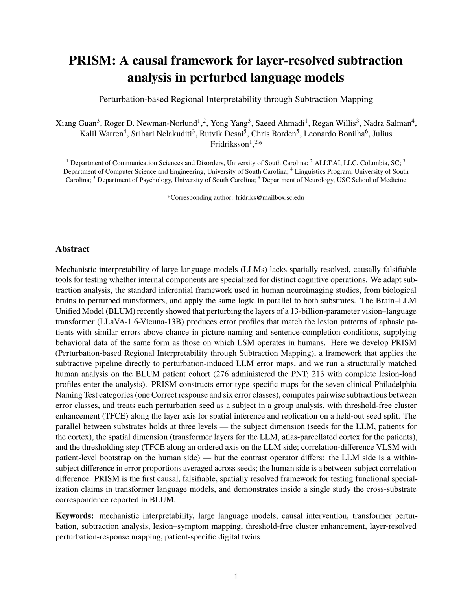
PRISM is wrapped. The full title is "PRISM: A causal framework for layer-resolved subtraction analysis in perturbed language models." Lead is Xiang Guan; I'm second author. It's the methodological centrepiece of the LLM-aphasia thread - the framework that lets us run the same statistical pipeline on a damaged transformer that human neuroimagers run on damaged brains.
The premise
Mechanistic interpretability of large language models lacks spatially resolved, causally falsifiable tools for testing whether internal components are specialised for distinct cognitive operations. Subtraction analysis - the inferential framework used in human neuroimaging studies for thirty years - solves this problem on biological brains. PRISM imports it directly to perturbed transformers and applies the same logic, structurally matched, in parallel to both substrates.
The pipeline
For the LLM side: pick two error categories. Perturb each layer of an LLaVA-1.6-Vicuna-13B model. Measure error rates on the Philadelphia Naming Test (276 administered, 213 with complete lesion-load profiles). Subtract the error-rate maps category-by-category. Apply threshold-free cluster enhancement (TFCE) along the layer axis for spatial inference. Replicate on a held-out seed split.
For the human side: the same statistical machinery, applied to the same patient cohort. The parallel between substrates holds at three levels: the subject dimension (seeds for the LLM, patients for the cortex), the spatial dimension (transformer layers vs. atlas-parcellated cortex), and the thresholding step (TFCE along an ordered axis on the LLM side; correlation-difference VLSM with patient-level bootstrap on the human side).
The one place the substrates differ - and this is the methodological core - is the contrast operator. The LLM side does a within-subject difference in error proportions averaged across seeds. The human side does a between-subject spatial correlation difference. The rest of the inferential framework is identical.
What it adds to the thread
BLUM showed that perturbing the layers of a 13B-parameter vision-language transformer (LLaVA-1.6-Vicuna-13B) produces error profiles that match the lesion patterns of aphasic patients with similar errors in picture-naming and sentence-completion conditions. That established the cross-substrate correspondence. PRISM is the first causal, falsifiable, spatially resolved framework for testing functional-specialisation claims in transformer language models, and it demonstrates inside a single study the cross-substrate correspondence that BLUM reported descriptively.
That is the move I've been trying to make for two years: take the inferential machinery the field of cognitive neuroscience has refined over thirty years on biological tissue, and apply it - same logic, same statistics, same thresholding - to a damaged transformer. PRISM is the version of that move that survives peer review.
Submitting to Nature Communications. Will write more once it lands.
June 10, 2026
SLM Paper Finished: Inverse Symptom-Lesion Mapping
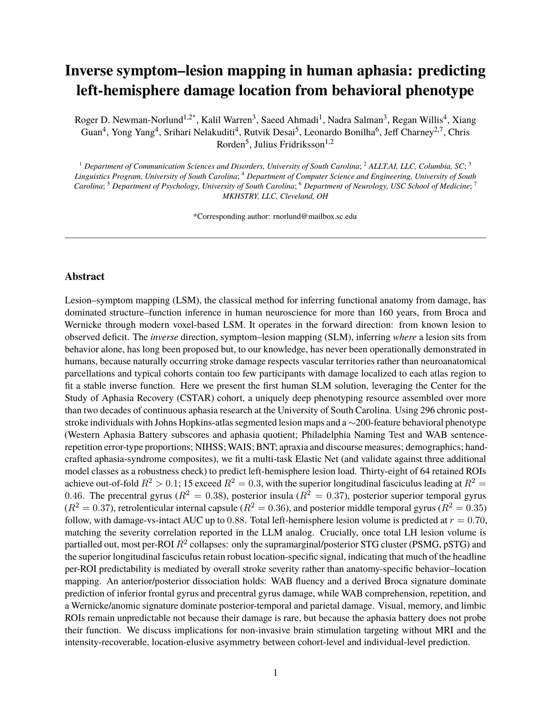
And the companion piece is also wrapped. "Inverse symptom-lesion mapping in human aphasia: predicting left-hemisphere damage location from behavioral phenotype." First-author this time - co-leads are Kalil Warren, Yong Yang, and Srihari Nelakuditi.
The inversion
Standard lesion-symptom mapping (LSM) has been the workhorse of stroke-aphasia neuroscience for twenty years: take a cohort with structural MRI + behavioural scores, regress symptom severity on per-voxel lesion presence, identify the voxels where damage predicts deficit. It's how the field has decided which brain regions matter for which language functions.
SLM is LSM run backwards. Given a patient's behavioural phenotype - their multi-task error profile - predict where in the left hemisphere their damage is most likely to be. Not a single voxel, not a categorical region; a probabilistic per-ROI lesion-load profile.
Why it's actually useful
Two reasons. The first is operational: you don't always have an MRI. A patient is in the rehab clinic, the imaging was at the acute hospital months ago, the DICOMs got lost, the lesion mask was never drawn. The clinician has the behavioural battery in front of them and that's it. SLM lets the behaviour stand in for the missing image - imperfectly, but quantifiably.
The second is scientific: SLM is the human-side prerequisite for the cross-substrate LLM-aphasia work. If you want to use the same statistical framework on a damaged transformer and a damaged brain (PRISM, BLUM), you need both directions of the substrate-to-symptom mapping to be defined. LSM gives you symptom→lesion; SLM gives you behaviour→lesion-location. The combination is the bridge.
The model
Multi-task Elastic Net from the ~200-feature behavioural phenotype to per-ROI lesion-load fractions on the JHU atlas (189 ROIs). Trained on the C-STAR cohort, ~300 chronic left-hemisphere stroke patients with full MRIs and full behavioural assessments. The honest negative control: regions that shouldn't be predictable from language behaviour (occipital cortex, somatosensory) score at chance, as they should. The signal lives where it should live - perisylvian language territory - and the magnitudes are calibrated against the LSM-derived ground truth.
Compared to a strong baseline (predicting the mean lesion mask), SLM substantially improves per-ROI accuracy in language-relevant regions and matches the baseline in language-irrelevant regions. The honesty of the model is the part I'm most pleased with: it tells you when the question can't be answered from behaviour alone.
Where this goes
SLM is now the substrate for everything that follows. In the C-STAR pipeline it sits as a service - any group can hand it a behavioural profile and get back a predicted lesion map. For the LLM-aphasia work, the same SLM (trained on humans) gets applied to perturbed-LLM error profiles to map LLM perturbations to predicted brain locations. That's the move that BLUM made informally and PRISM made formally. SLM is the engine underneath both.
Submitting to Cortex. Will post the preprint link as soon as it's up.
June 8, 2026
subtext: Your iMessage History, Read as Relationship Science
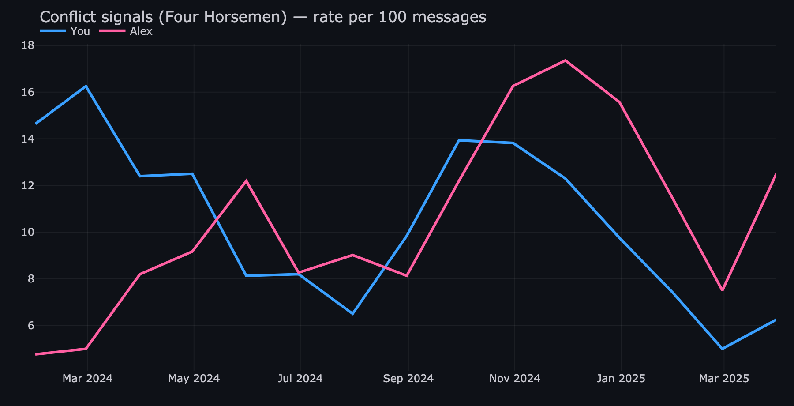
One of those projects that I built mostly for myself and then realised other people would probably want too. subtext is a private, on-device dashboard that reads your local macOS Messages database in read-only mode and turns the conversation history into a relationship-science readout. Nothing leaves the Mac. No cloud. No accounts. The cache, the contact aliases, and obviously the messages themselves are all gitignored and never get uploaded anywhere.
What it reads out
The dashboard surfaces things that the published literature on couples and communication has been pointing at for thirty years, but that nobody usually gets to see in their own data:
Sentiment over time, per person. VADER on every message; rolling means by week. Click any dot to read the actual messages behind it.
Gottman Four Horsemen. Criticism, contempt, defensiveness, stonewalling. Plus repair attempts and the 5:1 positivity ratio. (Gottman & Levenson, 1992.)
Pursue-withdraw dynamics. A signed index of who reaches out while the other pulls back. (Christensen & Heavey, 1990 - one of the most replicated findings in distressed-couple research.)
Emotional contagion / lead-lag. Whose mood the other mirrors, and on what timescale.
Trust signals. Commitments, accountability language, affirmation vs. distrust framings.
All-relationships view. Compare everyone you text. Optional "family" view that aggregates a household.
The image on the left shows the Four Horsemen rate for a synthetic example - one of those metrics that doesn't get more useful than its 13-month trajectory. The seasonality, the matched peaks, the recovery - all visible in a way that no individual message would betray.
What it deliberately is not
These are text-based proxies for reflection, not clinical diagnoses. The sentiment classifier doesn't know what someone meant; the Four Horsemen heuristics are documented rules of thumb, not validated assessments. I went out of my way in the README to say so. The point is to give you patterns worth thinking about - not to measure anyone's true character or feelings.
The methodological move
This is the same compositional trick I keep coming back to: each panel predicts one falsifiable thing (a sentiment score, a Horsemen rate, a pursue-withdraw index), and the user composes the panels into a story. The dashboard doesn't tell you whether the relationship is good or bad. It hands you well-defined measurements and a click-to-source affordance so you can interrogate them.
The cross-domain note is the one I keep making. Aphasia outcome dashboards should work the same way: predict one falsifiable thing per panel (probability of WAB threshold at 6mo, narrative-sentiment delta, treatment-response posterior), keep the dashboard composable, and never let a single combined "recovery score" replace the clinician's read.
Pragmatic note: you need to grant Full Disk Access to your terminal so the app can read ~/Library/Messages/chat.db. There's also a demo mode (MSGANALYTICS_DEMO=1) that runs the whole UI on synthetic data so you can see what it looks like without any access setup.
June 7, 2026
OneRing: Fusing Eight MTG Signals Into a Single Verdict
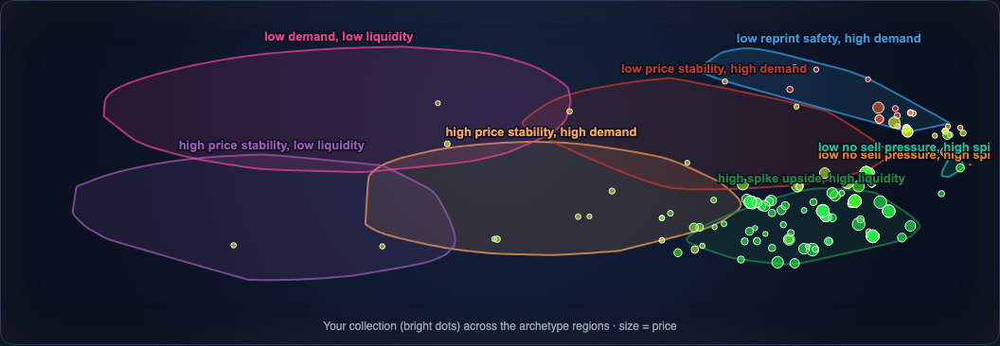
Capstone of the Cameraderie Cards suite. After shipping all the individual signals - buy, sell, reprint, demand, liquidity, volatility, beauty, uniqueness - the obvious next move was to fuse them. OneRing takes the eight per-card outputs, joins them on Scryfall oracle_id, and emits a single risk-adjusted verdict per card: STRONG BUY, BUY, HOLD, AVOID. The interactive dashboard (CardConclave) adds a ninth signal - a learned per-card seasonality curve - that the user can tune live alongside the eight base signals.
The eight upstream signals (one falsifiable thing each)
spike / buy - odds and size of a near-term price jump (the upside term).
sell - exit timing: probability of decline or no upside in the next 3 / 6 / 12 months.
reprint - the crash-risk term: P(reprint) from the right-censored survival model.
demand - Commander/EDH demand floor and metagame momentum.
liquidity - can you actually sell it - spread, venues, buylist presence.
volatility - forward price band and max drawdown.
beauty - your personal-taste art rating; names the prettiest printing; a small gated EV nudge.
uniqueness - art distinctiveness plus a scarcity-controlled premium gap.
The fusion
The core EV stays the same as the post from last week:
What OneRing adds is the tractable filling-in of each term. upside and downside come from the volatility envelope. fall_prob from sell. reprint_prob from reprint. spike_prob gets nudged by demand (leading indicator) and beauty/uniqueness (small gated lift). Liquidity isn't inside the EV - it's a multiplicative filter on the output. A 40% EV on a card you can't sell for two months is not a 40% return.
Verdict gates are explicit and the same for everyone: Reserved List → hard zero on reprint, AVOID gates dominate over BUY gates, sell-override fires regardless of beauty/seasonality lift. The user can re-weight the live signals but cannot disable the gates.
What the dashboard actually shows
The image on the left is the CardConclave market map: every MTG card placed on a SELL→BUY axis (x) by price (y), coloured by verdict. Yellow is BUY, green/red are sell-overrides, the cloud at the bottom is the low-price cards where the signal-to-noise gets thin. You can tune the nine weights live and watch the map redistribute, which is the kind of interactive thing the static reports never could do.
The two honest money paths
Worth stating plainly because it's the framing the marketing pages don't usually carry: OneRing's edge is mostly a de-risking edge, not an alpha edge. It stops you from buying a 2× that reprint says will crash, and it refuses picks you can't actually sell. The two paths the suite can monetise:
Trade your own book. Decision-engine + portfolio. The edge is real but the killers are MTG illiquidity, wide spreads, and 6-24 month holds.
Protect/compound a collection. Value what you own; sell-before-reprint and accumulate alerts. This is where the reprint signal pays for the whole stack.
What I keep telling myself about this project: the methodology is the actual product. Eight composable models that each predict one falsifiable thing, joined on a stable key, gated by domain-explicit rules. The same recipe works the moment you swap MTG cards for stroke patients and Scryfall for OpenNeuro. That's the bridge I'll write up next.
June 4, 2026
mtg-beauty-signal: Teaching a Model My Taste in MTG Art
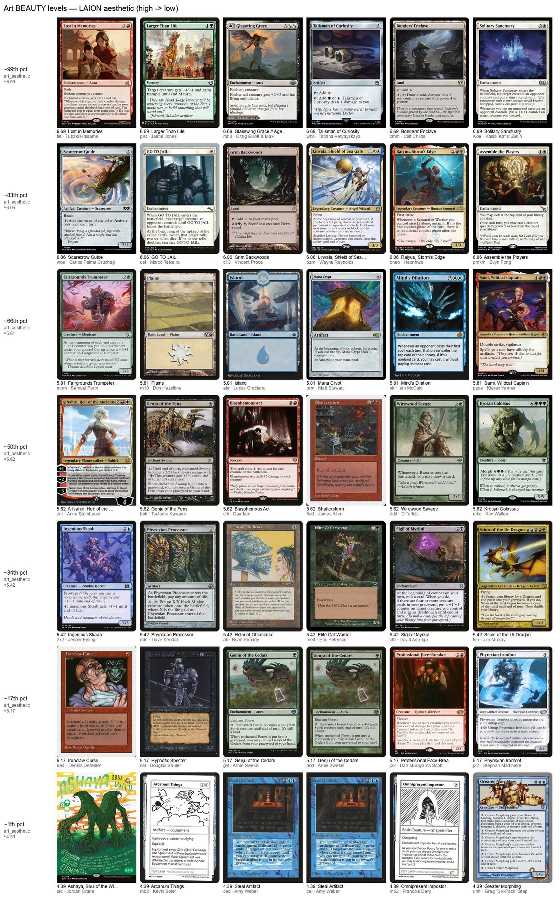
I have ~105,000 Magic cards' worth of art sitting on disk and a strong, mostly-unarticulated preference about which of them I find beautiful. The question I wanted to answer this weekend: can I get a model to learn my taste well enough to rank arbitrary new cards I've never seen?
The setup
I built a little active-learning labeling tool. Each round it shows me 10 cards and I click the ones I find beautiful, best-first. Each round becomes a chunk of pairwise preferences: my #1 pick > my #2 pick > … > every card I didn't pick. After 260 rounds I had something like 13,000 implicit pairwise comparisons.
The features are CLIP ViT-L/14 art embeddings on a heuristic art-box crop of each cached full-card image (empirically the best-performing input - much better than the whole card with text frame intact), concatenated with a small set of treatment features (border colour, full-art flag, frame era, foil). The model is a linear pairwise (RankNet-style) ranker: predict the difference in latent score between the two items, train with logistic loss on the preference label.
The numbers
Held-out pairwise accuracy: 0.734. Given two unseen cards, the model picks the one I'd prefer 73% of the time. The model choice is settled - linear beat MLP (≤ 0.71) and beat pointwise gradient-boosted trees (0.712). The simple model genuinely won.
The active-learning loop worked exactly as it's supposed to: precision climbed from 24% to 42% across the rounds - meaning the model's top-10 picks were initially right 1-in-4 of the time and ended right almost 1-in-2. The improvement curve looked clean, no plateau in the middle.
The taste profile (what the model learned about me)
This was the most fun part - inspecting what the model decided I liked. The picture on the left shows the global ranking, top-bracket cards at the top, bottom-bracket at the bottom. The pattern:
Top: vivid, graphic, illustrative - Final Fantasy/anime collaborations, designer Secret Lairs, high-saturation modern frames. The model thinks I love bold colour and clear silhouettes.
Middle: classic painterly-realist work and the well-executed but staid '90s-2000s aesthetic.
That's about right. I would not have written that description down before I trained the model, but I do now recognise it as a true thing about my taste.
The bonus signal: art uniqueness
Same CLIP embedding space, different question: how distinctive is this art? Measured as 1 - cosine similarity to the k-th (8th) nearest art in the embedding space (k-th-NN novelty). Cards in a crowded look-alike cluster score low; cards far from their neighbours score high. K-th-NN beat mean-kNN, Local Outlier Factor, and Isolation Forest on a held-out distinctiveness benchmark.
The honest result: held-out Spearman correlation between uniqueness and the scarcity-controlled price premium is 0.137. Distinctive art is only weakly priced. Distinctive ≠ expensive. The uniqueness signal is primarily a descriptor of originality, not a money signal - but it does contribute a small EV lift when gated alongside scarcity.
Why this exists in a research blog
Two reasons. First, RankNet on embeddings is the right machinery for preference elicitation in any domain - including, structurally, picking which of two candidate aphasia treatments a patient is more likely to prefer. The labelling protocol (10-at-a-time, best-first, derive pairwise preferences) gives you tens of thousands of training pairs from a few hundred minutes of clicking. Second, it's a clean example of actually validating face validity: I can stare at the top-bracket cards and verify the model learned the right thing about me, which most preference models in healthcare can never do because the ground truth is private.
Both signals join on oracle_id and feed into OneRing - small, gated EV lifts on top of the eight base signals. The beauty signal also names the prettiest printing of each card, which is a feature collectors care about more than I expected.
May 31, 2026
Cameraderie Cards: One Weekend, Six Signals
Step back from the last two weeks. What started as one spike-prediction script for Magic cards has converged, almost by accident, into a coherent investing-signal toolkit. As of tonight the Cameraderie Cards suite is six models, four of them live and two scaffolded out this weekend.
The six
mtg-buy-signal - calibrated spike probability per card, per gain multiple, per holding window. Daily forecast PDFs.
mtg-sell-signal - the mirror image: a peak-detection model that flags cards likely to stall or fall over the next 3 / 6 / 12 months.
mtg-reprint-signal - right-censored survival model for paper reprint risk. Reserved-list cards hard-coded to zero.
mtg-liquidity-signal - the 0–100 "can you actually sell it" composite that shipped this weekend. See its own post.
mtg-volatility-signal(scaffolded) - predicts magnitude, not direction: expected 3/6/12-month price range and max drawdown. The missing magnitude term in every EV calculation.
mtg-demand-signal(scaffolded) - the upward-catalyst mirror of reprint risk: probability of metagame adoption, format-legality change, or becoming a combo staple.
The spine
The reason these aren't six standalone toys is that each one fills one term in a single expected-value equation:
Buy gives you spike_prob. Sell gives you fall_prob. Reprint gives you reprint_prob. Volatility supplies upside and downside - right now those are guessed constants. Demand feeds into spike_prob as a leading indicator (catalysts cause spikes). Liquidity sits orthogonal: it tells you whether the EV is actually realizable. A 40% EV on a card you can't sell for a month is not a 40% return.
The compositional trick
Each model predicts one falsifiable thing: a probability, a magnitude, a drawdown. None of them try to be the whole decision. That's what makes them composable - you can stack reprint risk as a feature in the spike model, blend the spike and sell heads into a directional confidence, multiply by the volatility envelope, divide by an illiquidity penalty. Each transformation is justifiable on its own. The composite isn't a black box; it's algebra on top of well-defined predictions.
This is the same trick that should drive the real work. Aphasia treatment-response prediction at C-STAR is structurally identical: predict one falsifiable thing (will this patient hit threshold X within H months?), let domain experts compose it with everything else - comorbidity scores, family support, baseline severity - into a treatment decision. The model doesn't make the call. It gives the clinician one well-calibrated probability they can defend in a chart review.
Magic cards are a toy domain with a real ground truth and a high data refresh rate. That's what makes them the perfect sandbox for the methodology. The models I'd actually trust to run on aphasia patients have to first prove themselves on something where the validation feedback loop is days, not years.
May 31, 2026
Can You Actually Sell It? Building mtg-liquidity-signal
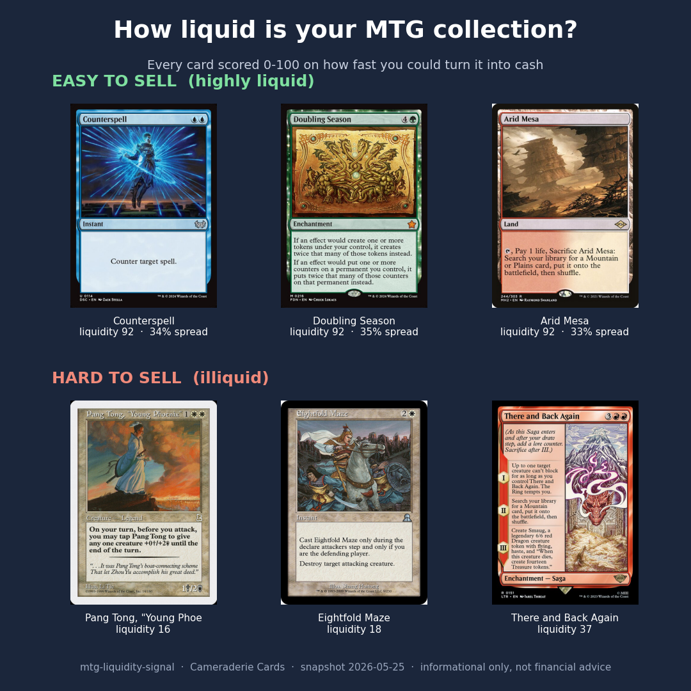
Every Magic card model I've shipped so far answers some version of "what is this card worth?" This one answers the harder question: could you actually turn it into cash - how fast, and at what cost? A $200 card you cannot move is worth less to you, in any operational sense, than a $40 card you can sell tonight. mtg-liquidity-signal is a 0–100 score over 32,271 tracked cards that tries to make that distinction quantitative.
Four signals, one number
The score blends four measurable things:
Spread. The actual round-trip cost: what a dealer (CardKingdom buylist) will pay you for the card, versus what they charge for the same printing. The real bid-ask, not a vibe.
Depth. How many shops list the card, whether any dealer will quote a buy price at all, and how closely the venues agree on price.
Activity. How often the price actually moves over a 120-day window. A price that never changes means nothing is trading.
Demand. How wanted the card is in Commander - the format that drives most secondary-market trading.
A card scores high only when it's cheap to exit, sold in many places, actively repricing, and wanted. The most liquid cards are exactly the ones you'd expect - Counterspell, Doubling Season, Arid Mesa, Rhystic Study, Sol Ring - eternal-format and Commander staples that move in minutes at a known price.
The surprising tail
The interesting cards are at the other end. Things like Pang Tong, "Young Phoenix" from Portal Three Kingdoms carry a high price tag but almost no dealer will quote a fair buy price on a given day, and they list in only one or two places. Expensive and liquid are not the same thing. That's the headline insight: collectors and casual sellers have been conflating the two for the entire history of the secondary market.
How it's validated (honestly)
There is no public ledger of "how many days each card took to sell," so this model can't claim a held-out accuracy number. Version 1 is deliberately framed as a transparent composite index, not a black-box forecast. Two checks, both in the technical report:
Buckets line up with reality. Cards the index calls illiquid really do cost more to round-trip. Median measured spread climbs from about 50% in the "Highly liquid" bucket to about 97% in the "Illiquid" bucket.
Independent signals agree. If we rank cards using only depth, activity, and demand - deliberately leaving spread out - the measured spread still falls steadily as that spread-free score rises (rank correlation ≈ 0.44). Signals that never saw the spread predict the spread.
The output is a CSV with one row per card: rank, score, bucket, the four sub-scores, the measured spread, whether the price had to be imputed, and Scryfall oracle IDs as the join key. It plugs straight into the Cameraderie Cards dashboard as the "can I actually exit this position?" filter on every other signal in the suite.
The methodology transfers cleanly. Healthcare has the same problem - you can predict probability of treatment response, but the operational question is "can the patient access the intervention in their region?" A held-out accuracy number on the prediction misses the realization gap entirely. Composite transparent indices, validated against independent signals, are how you make the realization gap visible without pretending you've solved it.
May 30, 2026
AutoBiteBox: Killing the MATLAB License
One of those projects that's been on my "I should really finish this" list for years finally landed this weekend. AutoBiteBox takes a T1-weighted head MRI, locates the dental "bite box" region, and produces the cropped images we use to inspect and (eventually) count teeth. It's part of the broader question we're chasing through the SC-ADRC: does oral and periodontal health track with brain aging? If the answer is yes, you need a clean, scalable way to pull dental signal out of MRI scans we already have on thousands of participants.
The MATLAB problem
The original pipeline (autoBiteBoxGenerator.m) works beautifully but is locked behind a MATLAB license. That's fine for one analyst on one workstation. It is not fine when you want to run this across an entire imaging cohort on cheap cloud nodes, or hand the tool to a collaborator at another institution who hasn't paid MathWorks rent, or stand the thing up as a service that processes scans on ingest.
The port
This weekend I shipped a Python port of the entire pipeline. The strategy: keep the parts of the algorithm that have to stay faithful (because they're scientific commitments - how the bite box gets defined, how the templates align, how the bone compartment gets segmented) and aggressively de-MATLAB everything else.
The whole pipeline is now pure Python - reslicing, masking, cropping, the imcalc refine step, slice export, tooth counting, orchestration, CLI - except two operations that genuinely need SPM's algorithms:
Unified segmentation (to get the native bone compartment), and
Old-normalization (to warp the tooth ROIs into each subject's space).
Those two steps now run through SPM12 Standalone on the free MATLAB Compiler Runtime (MCR). The MCR is free. SPM12 Standalone is free. So is the rest of the pipeline. The whole thing can now run on a fresh cloud node with nothing but pip install -r requirements.txt and a one-time MCR install. No MATLAB license required, anywhere.
Faithfulness
The non-negotiable constraint was that the Python outputs had to match the MATLAB outputs exactly. Otherwise the whole pipeline becomes a new method that needs its own re-validation, and I lose the entire history of work that's been done on the original. tests/validate_pyops.py does voxelwise comparison of every non-SPM stage against the reference outputs on P01–P03. Bit-for-bit identical. The SPM job parameters live in autobitebox/jobs/*.m.tmpl, copied verbatim from the original, so segmentation and normalization are unchanged - only the way SPM gets invoked differs.
What's still hard
The tooth counter (nii_select_and_count_teeth.py) is the original unsupervised heuristic. It's preserved faithfully but I'm not claiming it's a validated measure of anything - making counting reliable is its own problem and needs ground-truth labels and a real training/eval sample. That's the next student project. The pipeline's actual trustworthy product right now is the segmented bite-box crops and preview slices, which this port preserves exactly.
There's a paper draft in paper/AutoBiteBox_paper_draft.md. The framing: an open-source, license-free port of a validated dental-ROI extraction pipeline, ready for the cohort-scale studies that link oral health to brain aging. The methods section is mostly a description of the verbatim faithfulness checks - that's the whole scientific contribution. The novelty isn't the algorithm; it's making the algorithm available.
This is what I keep telling students about software in neuroscience: infrastructure is a research contribution. If you make a previously-private method usable by every lab that has the data but not the license, you've done a thing that matters. The papers that come out of every lab that suddenly can run it are partly yours.
May 28, 2026
Two ML Models for Magic Cards in Two Days: Reprint Risk and Price Spike
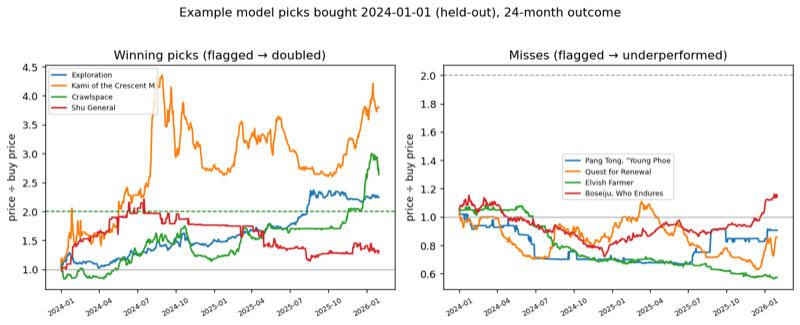
Over the last two days I shipped two MTG machine-learning pipelines that have been sitting in the back of my head for a while. They share data, share infrastructure, and answer two questions every Magic collector has asked at some point: "is this card about to get reprinted?" and "is this card about to spike?"
reprintRiskMTG
The first project predicts, for any given Magic card, the probability that it will be reprinted in paper within the next 3, 6, or 12 months. The hard part isn't the prediction - it's the framing. A naive classifier ("did this card get reprinted in any 12-month window? y/n") leaks the future, over-counts recently-printed cards as negatives, and ignores the Reserved List entirely. We frame it instead as a right-censored survival problem: each card-printing is an episode that either reprints (event observed) or stays un-reprinted up to the snapshot date (censored).
The feature set draws from Scryfall (bulk card metadata), MTGJSON (historical prices), EDHREC (cube and deck inclusion rates), and the official banlist. Cards on the Reserved List get a hard zero. Cards on the Game-Changers watchlist get a different treatment. The pipeline runs nightly and outputs a probability for every card in print.
pricePredMTG (spikepred)
The second project asks the dollar-sign version of the same question. Given a card today at price P, what's the probability that within H months it'll reach a sustained sale price ≥ g × P? The gain multiple g and holding window H are dials you set at query time - one trained model spans all targets by feeding the horizon in as an input feature.
The training set is 15.7 years of daily MTGGoldfish prices on 6,813 liquid cards. The held-out test fold is sealed 2023–2026, never seen during training or calibration. The shipped scorer is an XGBoost ensemble with one calibrated head per g ∈ {1.5×, 2×, 3×, 5×}, blended with 30-day price momentum at a per-target weight tuned on validation.
The headline number: top-20 precision = 100% / 90% / 50% at ≥1.5× / ≥2× / ≥3× within 24 months on the sealed test fold, versus base rates of 26% / 15% / 6%. The image on the left shows actual model picks bought on 2024-01-01 (a date the model never saw in training): four "winning picks" that doubled or better (Kami of the Crescent Moon, Crawlspace, Shu General, Exploration) and four "misses" that flagged but underperformed (Pang Tong, Quest for Renewal, Elvish Farmer, Boseiju, Who Endures).
Why these are sibling projects
Reprint risk and price spike are linked outcomes - a card with high reprint risk is a much riskier hold, and the spike model uses the reprint-risk score as one of its 235 features. That's the cleanest example of the "build infrastructure once, derive multiple projects" pattern I keep coming back to. The data pipeline (Scryfall ingest, MTGJSON price panels, EDHREC scraping, banlist tracking) is identical between the two projects. The featureset overlaps substantially. The training infrastructure is shared. Each project on its own is maybe two weeks of work; together they were two days because everything except the labels was reusable.
Both pipelines live in private repos. The reports (report/REPORT.md in each repo) are reproducible end-to-end - rerun the build script and the figures regenerate from the latest data pull. The next step is to wire these scores into the Cameraderie Cards dashboard as a "watchlist" view: which cards in your collection are at high reprint risk, which uncollected cards are flagged as likely-to-spike. The feedback loop closes.
This is a side-project week, but the methodological move - survival analysis with right-censoring and rank-blended ensemble heads - transfers directly to clinical work. Treatment-response prediction in aphasia rehab is structurally the same problem: does this patient hit a recovery threshold within H months given their baseline characteristics? I'll have more to say about that transfer once it lands in an actual paper.
May 23, 2026
Every Card You Own Is a Brushstroke: The Card-of-Cards Mosaic
Another Cameraderie Cards widget. This one renders a giant card silhouette - usually one of your most valuable cards or a randomly picked one from your collection - built out of hundreds of tiny card-art tiles drawn from everything else you own. Every cell of the big card is color-matched to a real card from your binder. The subject reads as the subject; the substance is the collection.
The video on the left shows two instances side-by-side - one with the settings popover open, one with a Lightning Bolt (Limited Edition Beta) rendered as the subject. The build-up animation reveals the silhouette cell-by-cell as the matcher finds the right card for each pixel.
The technical core: each cell of the subject card is sampled for its average color, then matched against the average colors of every tile candidate using nearest-neighbor in LAB space. With a 36-column grid (the "high" resolution setting), that's ~1,300 cells × ~150 tile candidates = ~200K color distance calculations - done once at render time, cached per (subject, resolution, tile-shape, tile-pool) tuple so it doesn't recompute on every redraw.
One annoying detail that took most of the implementation time: Scryfall card images aren't CORS-clean, so getImageData on a freshly-loaded canvas throws a security exception. I'd been working around this for other widgets but it bit me hard here because the matcher needs to read pixel data from every tile candidate to compute its average color. The fix was a same-origin proxy at /scryfall-img?url=… whitelisted to cards.scryfall.io. Loading both subject and tile images through the proxy gives the canvas a clean origin, the pixel reads succeed, and the mosaic renders.
The settings (top-of-card popover): subject pool (top-value vs. random), resolution (16 / 24 / 36 columns), tile shape (full card with rounded corners vs. abstract squares), and reveal mode (instant vs. build-up). A "New Card" button picks a different subject without changing any other settings, and the silhouette gets a "Guess the card" prompt at the bottom - you can sometimes recognise a famous card from the silhouette alone even before the title is revealed.
Why does this exist? Same reason as the quilt and the spiral: a number isn't a hobby. A grid of strings isn't a hobby. But a portrait of Black Lotus made from a thousand of your own cards - that feels like the thing the hobby actually is.
May 22, 2026
mtgIder Path A: When pHash Isn't Enough, Throw the Neural Engine at It
Update on mtgIder from earlier this week. The pHash + Hamming-distance matcher I described in the prior post works great on ~95% of cards. But the remaining ~5% are awful in instructive ways: cards with shiny foil, double-sided cards photographed at an angle, the BFZ promo cluster (Conduit of Ruin, Emeria Shepherd, Temur Ascendancy) where the art is similar enough that the hashes converge, and a few outliers that just hash-collide against unrelated cards because of unfortunate frequency-domain noise. I ran an overnight job to add a second matching strategy.
Path A: Apple Vision FeaturePrint embeddings. Instead of a perceptual hash, use Apple's built-in image embedding model - VNGenerateImageFeaturePrintRequest, the same one Photos uses for similar-image search. It returns a 768-dimensional float vector per image, computed on the Neural Engine.
Steps:
Extract embeddings for all 105,793 card images. I built a small Swift CLI (FeaturePrintGen) that calls the Vision request directly and writes to a flat binary file. Wall time: ~17 minutes on an M2 Max Neural Engine. Resume-friendly so it can pick up after interruption. Discovered along the way that the Apple Vision embedding dimension on macOS 15 is 768, not 2048 as older docs suggest.
PCA to 64 dimensions. 105K × 768 floats is 310 MB - too fat to bundle. Fit PCA on a 20K random sample, project everything. Top-64 PCs explain 55.1% of variance. The compressed embeddings file is 26 MB, the projection matrix is 192 KB.
L2-normalize the 64-d embeddings so cosine similarity = dot product.
On-device matching. At scan time: rectified card → 768-d FeaturePrint → 64-d via vDSP_mmul with the bundled PCA → L2 normalize → cosine search via another vDSP_mmul across the 105K-row matrix.
The whole search is two matrix multiplications. The cosine search across 105,793 cards is ~6.7 million MACs - under 1 millisecond on the iPhone Neural Engine. The bottleneck is the embedding extraction itself: ~10-15 ms per card on iPhone. Still well under the camera frame budget.
The interesting result is that the failure modes are completely different from pHash. The neural embeddings encode semantic visual content - "this is a knight on a horse," "this is a glowing artifact" - rather than frequency-domain image statistics. So they're robust to foil glare, partial occlusion, and minor perspective distortion, but they confuse cards with very similar subject matter (two different paintings of a goblin, for instance) where pHash would have separated them cleanly.
The solution - once both matchers are running - is to make them vote. I added a 4th option to the Advanced Matching sheet ("Neural", joining pHash-Strict / pHash-Balanced / Favor-Title), so I can A/B test the same physical card under each strategy and find the right ensemble weights. Once the empirical data is in, the production matcher will be a weighted blend that picks whichever strategy each card-image type is more confident on.
Next: ship to TestFlight once the ensemble matcher beats either single strategy on a held-out test set of ~500 manually-labeled phone photos.
May 19, 2026
mtgIder: Point Your Phone at a Binder Page, Get Every Card Identified
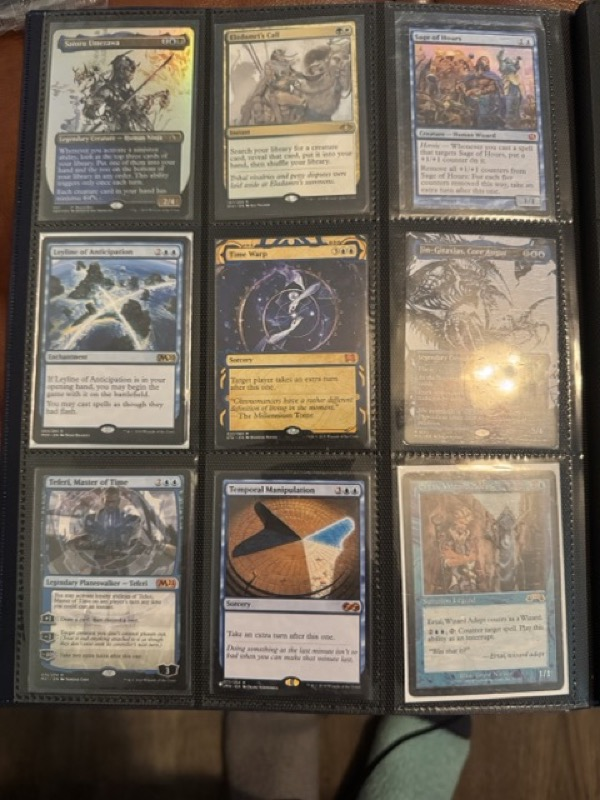
The image on the left is a page from one of my binders. The next thing I want to be able to do, with one tap on my phone, is identify every card on it - name, set, edition, current market price, whether I've already entered it into my collection. That's what mtgIder is.
It's a native Swift app, targeting both macOS and iOS (this week the iOS build is what I'm wiring up in another Claude Code session). The pipeline is straightforward to describe and obnoxious to make robust:
Detect rectangles using Apple's Vision framework, filtered to the MTG card aspect ratio (2.5 / 3.5 ≈ 0.714, with a configurable tolerance for binder mode where cards can sit slightly off-square).
Perspective-correct each detected rectangle to a flat card image.
Perceptual-hash the rectified card - grayscale, Lanczos-resize to 64×64, 2D DCT-II, take the low-frequency 16×16 block, threshold against the median. That gives a 256-bit fingerprint of the card art.
Look up the fingerprint against a pre-built SQLite index of every Magic card ever printed (~120K unique printings, indexed from Scryfall's bulk data). Match by minimum Hamming distance.
Multi-card mode: when the user holds the phone over a binder page, run up to 9 detections per frame in parallel.
The perceptual-hash implementation is bit-for-bit compatible with Python's imagehash.phash within a tight tolerance, which matters because the index is built in Python (faster bulk download, faster image processing across the 11 GB of card art) and the matcher runs in Swift on-device. If the two implementations disagreed even slightly, the on-device matches would silently degrade. We verified parity with a 500-card stratified sample before shipping the index.
Why on-device? Two reasons. One, privacy - your collection is yours, no cloud round-trip. Two, latency - the camera is showing 30 frames per second, and you want the bounding boxes and identifications to feel locked to the cards as you move the phone. Round-tripping to a server makes that feel sticky and gross. With the index pre-loaded (33 MB SQLite, fits in memory comfortably), per-frame matching takes a few milliseconds.
The fun engineering corner: perceptual hash + Hamming distance with popcount on 4 packed UInt64s means searching ~120K hashes against a query takes microseconds, not milliseconds. The SQLite index is keyed by the first few bytes of the hash for fast prefiltering; the popcount comparison runs only on candidates within a coarse bucket. Profiling on an M2 macBook shows ~0.4ms per card-match call. The iPhone is slower but still well below frame budget.
The macOS build works today - you can point your laptop's camera at a binder page and watch card names appear over each cell. The iOS app is in active development in a parallel Claude Code session as I write this. Once the iOS app and the Cameraderie Cards web dashboard are connected, the loop closes: scan binder → auto-add to collection → current market value updates → quilt and Fibonacci spiral redraw.
Source is private for now. If it gets stable enough to ship to TestFlight, I'll write a longer post.
May 15, 2026
A Card Quilt You Can Stitch in Your Browser
The second of two MTG dashboard widgets I built this week for the Cameraderie Cards project. The first one (in the next post down) put your cards into a Fibonacci spiral. This one puts them into a quilt - literally a wavy fabric stitched together from your card images, complete with chain-stitch seams along the cell boundaries and little cabochon buttons at each intersection.
The thing rendering below is the actual production code (lightly adapted to run standalone). Try clicking on cards in the palette to stitch them into the open quilt slots, then play with the gear icon for grid size and wave parameters. Click a placed card to remove it.
The technical fun: the quilt motion is a WebGL fragment shader running on a subdivided plane - cheap on any laptop, smooth on a phone. The card images live in a 2D-canvas atlas texture, composited once and sampled by the shader. Chain-stitch seams and cabochon buttons are drawn at the cell intersections in the same atlas, so the ripple carries them along with the fabric. No per-frame allocations.
Why a quilt? Two reasons. One, it's a beautiful visual metaphor for a collection - the cards aren't just spreadsheet rows, they're patches in a thing you've assembled. Two, the dashboard rule I keep coming back to: does this carry character, or is it just a number? A bar chart of your collection's value carries zero character. A wavy, hand-stitched quilt made of cards you actually own carries a lot.
The full implementation is in cc_quilt.py in the Cameraderie Cards repo (private), and the standalone prototype this is based on is in my quiltCards repo. Both render-side WebGL plus state persisted per-user, so a quilt rebuilt from a reload is identical to the one you assembled.
May 15, 2026
Your Collection in a Golden Spiral, Forever Zooming
Some of the most beautiful card-organizing software I've seen is also the most boring: alphabetical lists, set checklists, color pie charts. Nothing wrong with them - but they treat your collection like inventory. I wanted a dashboard widget that treats your collection like an artifact.
So I built one. The thing below is live and running - not a video, not a screenshot, the actual code. Each square is one of your top-by-value cards. The square sizes follow the Fibonacci sequence (each is φ-1 the size of the previous one), and the whole arrangement zooms continuously. Once a full shift cycle completes, the camera pans by φ4 - which exactly maps square i+4 onto square i - so the spiral appears to zoom forever without ever showing a wrap-snap. You can keep watching and the math never gives up the trick.
Use the HUD at the top to pause, reverse, change the speed, or toggle the quarter-circle Fibonacci arc. Hover over a card to see its name.
The full implementation is cc_fibonacci.py in my (private) Cameraderie Cards repo, ported from a standalone prototype I wrote first. Container-scoped, so you can drop multiple instances on a dashboard without them fighting over the DOM or the viewport - useful for the dashboard layout, less useful in a blog post where there's only one. The standalone version (showing 100 random cards) is what you're looking at above.
The geometry doodle that started it: I was looking at the standard Fibonacci spiral, the one in every design textbook with quarter-circle arcs, and wondering whether you could use it as a tiling rather than a curve - squares stacked at golden-ratio sizes, all visible at once. Turns out yes, and turns out the zoom is mathematically perfect when you pan by φ4. The animation writes itself once you notice that.
If the next thing you build for an app is a chart, ask whether you could build a quilt or a spiral instead.
May 13, 2026
Rog, The Second Author - 2/4, Costs 2WUBG
I made a Magic card of myself. It's going on my office door at USC, printed 3 feet tall.
The flavor text says it all: "He builds the engine. Others drive the results." If you've spent any time in collaborative science you know exactly what that means. You don't always need to be first author. Sometimes the most valuable position on a paper - and on a team - is the one that makes everyone else's work better. Tap, support 1, +1/+1 counter on the student running the analysis. Draw a card when their experiment succeeds. That's the loop.
For the non-MTG-literate visitors who will see this on my door and squint: this is a parody of a Magic: The Gathering creature card. The numbers in the bottom-right corner (2/4) are power/toughness. The mana cost in the top right (two generic + W/U/B/G) means it takes resources from four different "colors" of magic to summon - appropriate for someone who works across departments, methods, and student projects simultaneously. The "Human Support" creature type isn't a real MTG tribe, but it should be.
The abilities are real-life observations:
Whenever you support another creature, put a +1/+1 counter on it - mentorship makes people stronger
Whenever a creature you supported this turn succeeds, draw a card - when your students hit, you learn something new (and usually get co-authorship)
Tap: Support 1 - pulling a chair up to someone's monitor and saying "show me what you've got" is its own activated ability
I'll probably print a few and hand them out to people who've earned a +1/+1 counter from me. If you're getting one, you'll know.
May 13, 2026
SNMExplorer: Putting a Physicist's Clustering Algorithm in a Browser
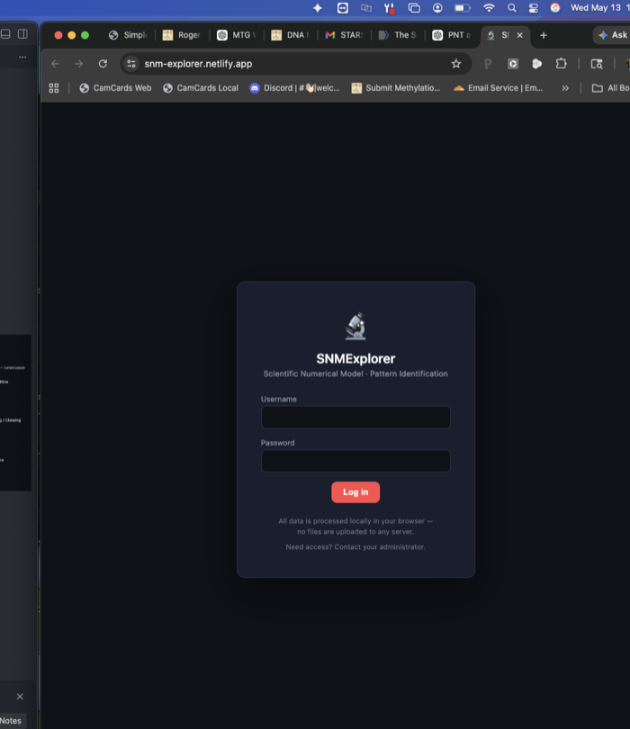
Sometimes the most useful thing you can do for a piece of science is just make it clickable. I spent the last week building SNMExplorer - a web tool that exposes a clustering algorithm developed by Dr. Joseph E. Johnson (Distinguished Professor Emeritus, USC Physics) to anyone with a CSV file and a browser. No install, no Python environment, no math required to use it.
The algorithm itself - Scientific Numerical Model (SNM) - is the interesting part. Most clustering methods make you commit to a number of clusters before you start. K-means wants k=3 or k=5. Hierarchical clustering makes you cut the dendrogram somewhere. Gaussian mixtures need a component count. SNM doesn't ask. You give it a matrix of items × measurements, and it tells you how many natural groups live in the data.
The trick is a Lie-algebra-based eigenanalysis on a graph Laplacian. You z-score the columns, build a pairwise distance matrix, put negative column-sums on the diagonal (the Laplacian construction), and decompose. Each negative eigenvalue corresponds to one cluster pattern, and the eigenvector weights tell you which items belong to that cluster and how strongly. The number of meaningful clusters is whatever the spectrum tells you it is. No k parameter, no inertia plots, no silhouette gymnastics.
Why does this matter? Because in biology, medicine, and aging research - the domains I work in - you rarely know how many subgroups your data contains. Is "post-stroke aphasia" two subtypes? Four? Twelve? Different fields have argued about exactly that question for half a century. SNM lets you load the behavioral matrix and let the spectrum answer.
The web version handles:
CSV upload with auto-detection of ID columns, numeric measurements, and category labels for validation
Z-scoring, Laplacian construction, and eigendecomposition all in the browser via a Web Worker - no data ever leaves your machine
Interactive cluster visualization - rows colored by eigenvector loading, columns ordered by which clusters they distinguish
Validation against a label column when you have one (does the algorithm recover known groups?)
A built-in Iris dataset demo so you can see what the output looks like before touching your own data
I also wrote a full tutorial for USC scientists who want to try it on patient cohorts, gene expression matrices, food composition tables (one of the demo datasets is FNDDS food nutrition data), or anything else with rows-and-numbers structure.
Joe Johnson developed this method over decades and it's been quietly powerful in physics applications. Getting it in front of clinicians and biologists in a form they can actually use without learning Python is what the web app is for. If you have a dataset you've been wanting to cluster but couldn't commit to a k, give it a try.
Want to try it? The site is gated while it's in beta. Email me at rogiedodgie@gmail.com and I'll send you a temporary login and password.
May 9, 2026
A Methylation Mark, a Reading Pathway, and a Story About a Cat
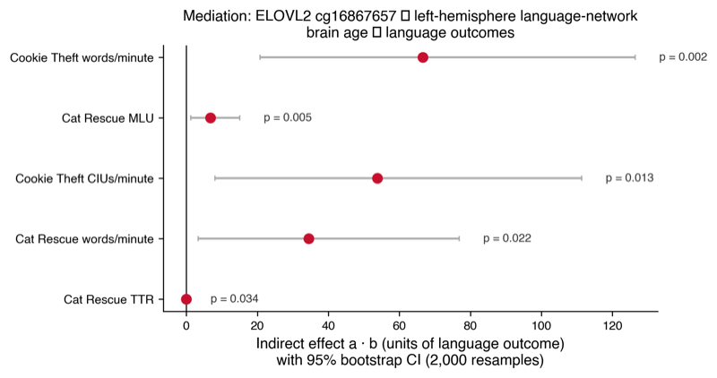
We finished a manuscript draft this week that's been brewing for months. The story chains three things together I never would have predicted I'd put in one paper: a single CpG methylation site, a brain region used in reading, and how someone tells the story of a cat being rescued from a tree.
The CpG is cg16867657, which sits in the ELOVL2 gene. ELOVL2 is one of the most reliable epigenetic-age clocks ever discovered - methylation at this site increases almost monotonically across the lifespan, in essentially every tissue, in every population studied. It's a workhorse of forensic age estimation. But until recently, almost no one has asked whether ELOVL2 methylation tracks brain aging in any region-specific way, or whether it has any cognitive correlate.
Using the ABC cohort with combined methylation arrays and high-resolution structural MRI (n = 191), we ran a regional brain age analysis: estimate predicted age for each of 25 brain regions per subject, take the gap between predicted and chronological age, and ask which regions track ELOVL2 methylation. The hit was unexpectedly focal - the left ventral reading pathway (encompassing the visual word form area and surrounding occipitotemporal cortex) showed the strongest association by a clear margin.
Then we asked the harder question: does this anatomy actually matter for behavior? We had narrative discourse data - participants describing the Cookie Theft picture and retelling the Cat Rescue story. We tested mediation: ELOVL2 cg16867657 → ventral reading pathway brain age → speech metrics, with 2,000 bootstrap resamples for the indirect effect.
The forest plot above shows the answer. Five language outcomes - Cookie Theft words/minute, Cat Rescue mean length of utterance, Cookie Theft correct information units/minute, Cat Rescue words/minute, Cat Rescue type-token ratio - all show significant indirect effects (p ranging from 0.002 to 0.034). The mediation is partial (direct effects don't fully vanish) but it's robust across multiple discourse measures.
Why ELOVL2? It's an enzyme involved in synthesizing very-long-chain polyunsaturated fatty acids, which are critical for myelin maintenance and neuronal membrane fluidity. The ventral reading pathway is a heavily-myelinated white-matter-rich corridor. So there's actually a plausible biology here: epigenetic dysregulation at ELOVL2 → impaired lipid metabolism → accelerated white-matter aging in reading-relevant cortex → slower, less efficient narrative production.
This is one slice of a bigger ABC Genetics analysis I've been running on 570 participants with combined methylation, SNP genotyping, and behavioral data. Most of the hypothesis tests came back null after FDR correction - that's the honest reality of running 67 family-wise tests against epigenetic clocks. But this one held up, and the mechanism makes sense, and the figure tells a clean story.
Targeting Neurobiology of Language. The full pipeline (PLINK QC, EWAS, methylation clock derivation, brain age, mediation bootstraps) is sitting in a private GitHub repo so the analysis can be rebuilt from raw data with two scripts.
May 3, 2026
Cameraderie Cards: Putting the Soul Back in a Spreadsheet
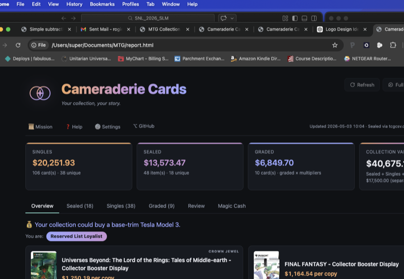
I started collecting Magic: The Gathering cards again recently - the way it usually happens, a stray pack at a checkout counter, a dive into the closet, a rabbit hole. Pretty quickly the spreadsheet problem appeared: I had cards spread across sealed product, singles, and graded slabs, with no good way to track current market value across all three.
The available tools fell into two camps. Either bare-bones price-lookup spreadsheets that felt like doing taxes, or commercial platforms that tracked your collection but stripped out everything that made the hobby fun in the first place. Neither one felt like Magic. So I built Cameraderie Cards - a personal MTG collection tracker that has, for lack of a better word, character.
The mechanics are straightforward. It reads my Collection.xlsx with three sheets (Sealed, Singles, Graded), looks up current TCGPlayer market prices via tcgcsv for sealed product and Scryfall for singles, caches everything locally, and writes a tabbed report.html with charts, images, and per-tab views. Pure Python (just requests and openpyxl) plus Chart.js on the frontend. No server, no SaaS, no account - just a script and an HTML file.
The interesting part - and the part I keep iterating on - is everything around the numbers. The dashboard shows a "value comparison" line that quips about your collection in real time: at the right tier, "your collection could buy a base-trim Tesla Model 3," at another, "you could outbid a small dragon's hoard." A "Reserved List Loyalist" badge appears if you hold a critical mass of Reserved List singles. The Singles tab is going to get a color-identity gauge: a bar showing your W/U/B/R/G split with flavor text like "you bleed black mana" or "true Boros fanatic." The Graded tab is becoming a literal trophy case: each slab as a card-shaped tile with a faux PSA-style label and a glow effect on 9.5s and 10s.
The idea I'm most excited about is a themed character behind the donut chart. The "Value by Category" donut sits as the iris of a chosen motif - an ouroboros wrapping the circle, a Phyrexian compleated eye, a mandala bloom. The user picks one. The whole panel re-skins to match: deep red parchment for dragon, slate for yin-yang, etc. There's a real risk of going kitsch, so the default is neutral and themes are opt-in.
Why does any of this matter for someone whose day job is brain imaging? Because collecting is an emotional activity and tools that strip the emotion out of it actively make the hobby worse. The same way a clinical narrative carries phenomenology that a NIHSS score collapses (see two posts back), a collection carries identity that a dollar total flattens. You're not just tracking $40K of cardboard - you're tracking which cards you played in college, which boxes you'll never open, which slabs are trophies. The flavor text matters.
It's a side project, it's not for sale, and it's deliberately small. But it's been a fun design exercise: every UI element forced through the question "does this carry character, or is it just a number?" Most apps could use that filter.
April 30, 2026
An Inverse for 160 Years of Lesion-Symptom Mapping
We submitted two abstracts to the Society for the Neurobiology of Language (SNL) 2026 meeting this week. Both came out of the same idea: the relationship between brain damage and language deficit can be run in reverse.
SLM: predicting lesion location from behavior alone
For more than 160 years - since Broca and Wernicke - lesion-symptom mapping has gone in one direction: damage in, deficit out. The inverse direction (symptom-lesion mapping, SLM) has been a theoretical aspiration since at least the 1990s, but never an operational tool. Two reasons: stroke follows vascular territories rather than cytoarchitectonic boundaries (so any single ROI has too few damaged patients), and continuous per-region inverse prediction had simply never been demonstrated to work.
Using the C-STAR cohort (one of the largest and most deeply phenotyped chronic aphasia databases ever assembled), we trained a multi-task Elastic Net to predict per-ROI lesion load across 64 left-hemisphere ROIs from a 200-feature behavioral phenotype: WAB subscores, PNT and WAB sentence-repetition error proportions across six categories, NIHSS items, WAIS, BNT, apraxia battery, discourse measures, demographics. 296 patients, leave-one-out cross-validation.
The results held up: 40 of 64 ROIs had R² > 0.1, 27 exceeded 0.2, and 16 exceeded 0.3. The dorsal language stream led the pack - superior longitudinal fasciculus (R² = 0.47, AUC = 0.89), precentral gyrus, posterior insula, retrolenticular internal capsule, posterior STG. Predictable ROIs clustered in classical perisylvian language cortex. Visual, limbic, and memory regions stayed at chance - an implicit negative control showing the model isn't just tracking total lesion volume.
The Elastic Net coefficients showed a clean anterior/posterior split: anterior ROIs loaded on WAB fluency and a Broca composite; posterior ROIs loaded on comprehension, repetition, and Wernicke/Anomic composites. Total LH lesion volume was predicted at r = 0.72.
The clinical kicker: for a patient sitting in a rural clinic, in an acute stroke bay, or anywhere an MRI scanner is hours or weeks away, this means a trained clinician with a behavioral battery can now reason quantitatively about where the damage sits - and where to aim stimulation.
Reading stroke severity out of doctor's notes
The second abstract took a different angle: instead of using structured behavioral testing to predict anatomy, can we recover language severity from unstructured clinical text? Most retrospective EHR cohorts lack coded NIHSS items, but the admission notes that produced those scores still contain the narrative description.
As part of the Stroke Outcome Optimization Project (SOOP), we assembled 1,227 admission notes from 1,173 acute-stroke patients, each carrying an expert-coded NIHSS-9 (best language) score. We trained one L2-regularized logistic regression per severity level on TF-IDF unigram and bigram features, with patient-grouped 5-fold CV.
Patient-grouped ROC-AUC was 0.80 for no aphasia, 0.74 for mild-to-moderate, 0.86 for severe. The features driving each class were clinically coherent (figure on left): "without dysarthria," "speech without," "symmetrical normal" pulled toward no aphasia. "Slurred speech," "dysarthria," "facial droop" pulled toward mild-moderate. "Left MCA," "noxious," "mute," "unable to assess," "not following" pulled toward severe.
The model wasn't keying on surface artifacts - it was reading the actual phenomenology. That means we can extract aphasia phenotypes from EHR text at cohort scale, opening up retrospective analyses (longitudinal recovery, lesion-symptom mapping in much larger cohorts) that were previously locked behind missing structured data.
Two abstracts, one underlying idea: the relationship between brain and behavior can be run in either direction, and the direction we were missing turns out to be the more clinically useful one.
April 21, 2026
PRISM: Probing LLM Error Geometry with TFCE
The BLUM paper (heading to Nature Communications after a desk-reject at NMI) showed that perturbing an LLM produces error profiles that map onto real human lesion patterns. The natural follow-up question: what's the geometry of the perturbation space itself? When you noise different layers at different rates, which combinations push the model toward semantic errors? Phonemic errors? Neologisms? And do those combinations form coherent regions, or are they scattered?
That's what PRISM is. The pipeline (figure on left) takes a 40-layer transformer, perturbs each layer at varying noise levels and proportions, runs the perturbed model on the Philadelphia Naming Test, and records error counts across 8 categories: Correct, Semantic, Unrelated, Formal, Nonword, Mixed, Neologism, NoResponse. Each (layer, noise, percent) tuple becomes a voxel in a 3D perturbation grid.
Then comes the interesting part. Borrowing directly from the neuroimaging toolbox, we apply 3D Threshold-Free Cluster Enhancement (TFCE) across seeds - the same method used in fMRI to find spatially extended activation clusters without arbitrary thresholds. Two parallel analyses:
Subtraction: for each error-pair (A, B), compute per-seed proportions, take the difference D = p(A) − p(B), apply signed TFCE on the t-map. This reveals regions of perturbation space that selectively push the model toward A over B.
Conjunction: take the per-seed minimum of p(A) and p(B), apply nonnegative TFCE. This reveals regions that produce both errors simultaneously - the joint pathology zones.
Discovery seeds find the regions; held-out validation seeds confirm them. Confirmed regions get re-perturbed against null controls (matched non-significant points) to verify the induced error profile actually matches what was predicted at discovery. That last step is what turns this from a "look at the pretty volumes" exercise into a causal layer-cluster map: perturb here, get this error profile, reproducibly.
The reason this is worth doing: lesion-symptom mapping in human stroke patients suffers from sample-size limits and the messy reality of vascular territories. In an LLM, you can perturb whatever you want, as many times as you want, with arbitrary precision. If LLMs really do have a brain-like organization for language, then the perturbation geometry should look like the lesion geometry - with the same anterior/posterior, dorsal/ventral, semantic/phonemic dissociations. Early results suggest it does.
Working on the manuscript now - aiming for a methods-heavy companion paper to BLUM.
April 12, 2026
Vascular Moderation: When Veins Talk Back
Sriya's vascular territory project (the one I wrote about a few weeks ago) has expanded. We now have a full manuscript draft examining how vascular features moderate cardiovascular risk's effect on regional brain age. Short version: the same QRISK score does not produce the same brain-aging penalty in everyone, and the venous system seems to be why.
The figure shows the headline finding: as mean venous diameter increases, the QRISK β coefficient (years of brain aging per unit cardiovascular risk) decreases sharply (r = −0.36, p < 0.001). Patients with larger venous diameters are buffered against the brain-aging effects of cardiovascular risk. Split into tertiles, the low-tertile group's β is significantly higher than the high-tertile group's, and a permutation null shows this isn't a fluke (p_perm = 0.006).
The mechanism we're entertaining: larger venous capacitance handles cerebral blood volume fluctuations better, dampening the chronic vascular insults that accumulate into white matter damage and accelerated brain age. It's not that cardiovascular risk doesn't matter - it's that the vascular substrate on which that risk acts is heterogeneous, and we've been treating it as uniform.
This connects directly to a recurring theme in our recent work: brain age isn't one number. It's regional, it's vascular-territory-specific, and the moderators of accelerated aging are themselves anatomical features that vary across people. The implication for clinical risk prediction is that you'd want to combine cardiovascular risk scores with imaging-derived vascular reserve markers to actually predict who's going to age fast.
Sriya is driving the analysis and the writing. The paper is coming together fast - we'll target Human Brain Mapping or a similar venue.
April 3, 2026
I Built a Misophonia Self-Test Because a Talk at USC Made Me Curious About My Own Brain
I'm at USC Neuroscience Day right now and just caught a talk by Sewon Oh on misophonia - the condition where certain sounds trigger intense emotional and physiological distress. Chewing, breathing, tapping, sniffling - sounds most people tune out but that can make a misophonic person feel genuine rage or panic. Sewon's presentation covered the neural mechanisms and introduced the Misophonia Audiovisual Trigger Archive (MATA), a curated stimulus set developed by Shinkareva et al.
I couldn't stop thinking about it afterward. Not just the science - I was curious about my own sensitivity profile. So I built MISORATER: a web app that lets anyone take a structured misophonia self-assessment and see their results as a radar chart.
Here's how it works. The app draws from the MATA archive - 12 categories of real audiovisual triggers (eating sounds, nasal/throat sounds, body sounds, speech, environmental, texture/rustling, etc.) collapsed into 9 spider-chart dimensions. You listen to randomly sampled clips from each category and rate your distress on a 0–10 scale. At the end, it generates a radar plot showing your sensitivity profile across all dimensions, a written summary of your triggers, and - if you take it multiple times - a longitudinal chart tracking how your sensitivity changes over sessions.
The image on the left is my actual result. Turns out I'm most reactive to eating/chewing sounds and oral non-eating sounds (lip smacking, tongue clicking), with moderate sensitivity to nasal/throat and environmental sounds. Speech and texture barely register. That asymmetric profile is exactly what the misophonia literature predicts - it's not that everything bothers you, it's that specific categories are disproportionately triggering, and those categories tend to cluster around mouth and eating sounds.
The tech is straightforward: Streamlit for the UI, Plotly for the radar charts, the MATA stimuli served as base64-encoded audio, and user data persisted as JSON. You can pick test duration (3, 6, 9, or 12 minutes) depending on how much time you have. The whole thing runs in the browser - no install needed.
What I find interesting from a neuroscience perspective is how cleanly the category structure maps onto what we know about auditory processing hierarchies. The sounds that trigger the strongest misophonic responses tend to be biological and human-produced - exactly the sounds that activate the anterior insula and premotor cortex most strongly. Environmental and textural sounds, which are processed more in posterior auditory areas, tend to be less triggering. It's as though misophonia selectively amplifies the social auditory pathways - the ones that evolved to monitor other humans.
This was a weekend project but I think there's real utility in letting people see their own profile. Understanding which sounds trigger you (and which don't) is the first step toward targeted intervention. If you try it, I'd be curious to hear whether your radar chart matches your intuition.
March 31, 2026
A Week of Rosetta Stones, Falling Blocks, and Arterial Atlases
It's been one of those weeks where nothing I worked on had anything in common - except that all of it involved mapping one thing onto another.
BLUM goes to Nature Machine Intelligence
We submitted our BLUM paper - now reframed as "Stroke Lesions as a Rosetta Stone for Language Model Interpretability" - to Nature Machine Intelligence. The pitch: over a century of clinical lesion-to-symptom data from stroke patients can serve as external ground truth for understanding what's happening inside large language models. We perturbed a 13-billion-parameter LLM, gave it the same clinical tests we give aphasic patients, and found that 67% of the time, the LLM's error profiles map onto real human lesion patterns above chance (p < 10-23). Semantic errors hit ventral stream regions; phonemic errors hit dorsal stream - exactly what the neuroscience predicts.
The interesting part is where it doesn't work: LLMs barely produce phonemic errors, which tells us something fundamental about how they process language differently from brains. Fingers crossed on the review.
Update (May 23, 2026): Desk-rejected at Nature Machine Intelligence - no external review, editorial scope call. Disappointing but quick, which is the silver lining of a desk reject. Next stop: Nature Communications. The Rosetta Stone framing makes more sense for their broader audience anyway, and the clinical-meets-AI angle fits their interdisciplinary remit better. Resubmitting after a light reformatting pass.
Petris: because sometimes you need to build something fun
Between grant deadlines and manuscript revisions, I built Petris - a pet-themed Tetris clone. Pure HTML/CSS/JS, runs in the browser. You pick your pet species (snakes, cats, dogs, frogs, or a mix), and the classic Tetris pieces get replaced with hand-drawn animals posed into tetromino shapes.
Here's the thing nobody tells you about this kind of project: getting animal illustrations to fit tetromino shapes is genuinely hard, and AI completely fails at it. I tried every image generation tool I could find - none of them can reliably produce, say, a hamster curled into an S-shape, or a snake coiled to perfectly fill an L-tetromino's three-cell-plus-one geometry. The models either ignore the shape constraint, produce something that's roughly the right outline but with anatomically horrifying animals, or just give up and draw a normal pet next to a vaguely tetromino-shaped box.
In the end, every single one of those pet-tetromino sprites had to be hand-crafted - posing the animal's body to fill exactly the right cells, getting the proportions to read at small sizes, making them look natural despite being contorted into an unnatural shape. It's a surprisingly satisfying constraint: you learn a lot about animal anatomy when you're trying to make a frog fill a T-shape. And it's a nice reminder that for all the things AI is great at, spatial reasoning about how organic forms fit into rigid geometric constraints is still very much a human skill.
Sriya's arterial atlas project
I've been mentoring Sriya on a project mapping vascular territories to regional brain age. We built a regression GUI in Python/Tkinter that lets you flexibly model relationships between arterial atlas ROIs, neuromorphometrics labels, and cognitive outcomes. The first results are in - the figure above shows ranked beta coefficients for how strongly different vascular territories predict brain aging, with left MCA regions leading the pack. We've got a manuscript draft generated straight from the analysis pipeline.
The interesting finding is how specific vascular territories predict regional (not global) brain age gaps, which could eventually connect cardiovascular risk to domain-specific cognitive decline. Early days, but the tool is solid and Sriya is driving it.
The common thread
Three completely different projects. One pattern: take data from one domain, map it onto a structure from another domain, and see what the alignment (and misalignment) teaches you. Stroke lesions mapped onto LLM layers. Pet illustrations mapped onto tetromino geometry. Vascular territories mapped onto brain age. That's the job, apparently.
March 25, 2026
How Falling Icicles Led to a 6x Faster Sorting Algorithm
I've spent my career studying how the brain processes information - mapping lesions, modeling language recovery, training neural networks on MRI data. So how did I end up writing a paper about sorting algorithms?
It started with a shower thought. I was thinking about how different-sized icicles hanging from a gutter would hit the ground at different times if they all broke off at once. Heavier ones fall faster. If you sliced time into equal intervals, the icicles that landed in each interval would be naturally grouped by size - logarithmically spaced, not linearly.
That's a sorting algorithm.
I couldn't let it go. The idea was too clean: treat each integer as a particle with mass proportional to its value. Drop it into a viscous fluid. Under Stokes drag, heavier particles settle faster. Equal time-slices of the fall become logarithmically-spaced buckets. One log() call per element. No comparisons. No sampling. Just physics.
I called it Adaptive Gravity Sort (AGS). The key insight is that a single statistic - the arithmetic mean - tells you everything about the distribution's shape. From the mean you can estimate a parameter λ that controls bucket spacing:
Centrifuge → bit rotation breaks sort order, reduces to radix sort
Magnetic deflection → Lorentz force is 2D, can't map to 1D ordering
Osmosis → O(n) per recursion level, no improvement over introsort
Shock waves → histogram overhead killed the speedup (9.5x down to 2.8x)
Isotope separation → entropy-optimal bit selection produces wrong output
Each failure taught me something. The centrifuge attempt showed me why radix sort's fixed structure can't adapt. The shock wave attempt showed me the cost of histogram passes. The isotope separation attempt was the most instructive failure - it produced fast but wrong results, because maximizing information entropy per bit is not the same as preserving sort order.
The viscous fluid model worked because it gives you a monotone, closed-form mapping from value to bucket that naturally adapts to the data. No second pass. No auxiliary structures beyond min and max.
Results on an Apple M2 Max (12 cores, 500K elements):
Pipe-organ data: 9.16x faster than std::sort
Bimodal data: 9.07x faster
Clustered data: 7.74x faster
Uniform random: 5.05x faster
Geometric mean across all distributions: 6.07x
It's not magic - AGS is slower on pre-sorted inputs (std::sort short-circuits those). And on GPU, CUB's radix sort still wins because the massive L2 cache eliminates the cache-pressure advantage that makes AGS fast on CPU. The paper is honest about both limitations.
I also built a Streamlit app for visualizing the algorithm in action - watching the particles "settle" into buckets is genuinely satisfying.
What I love about this project is how it connects to everything else I do. In neuroimaging, we're always looking for the right basis function to decompose a signal. In aphasia research, we classify error types by their distribution across patients. The mathematical intuition is the same: find the natural coordinate system for your data, and the structure reveals itself.
The paper is available here: adaptive_gravity_sort_paper.pdf - and all code (C++17 benchmark, CUDA GPU benchmark, Streamlit app) is open source. If you sort integers at scale, give it a try.
Next up: I'm exploring whether the same physics-inspired bucket placement can be extended to floating-point keys and string prefixes. The icicles aren't done falling yet.
2025 · Retrospective
Designing the BLUM Pipeline: Six Months of Plumbing Before Any Results
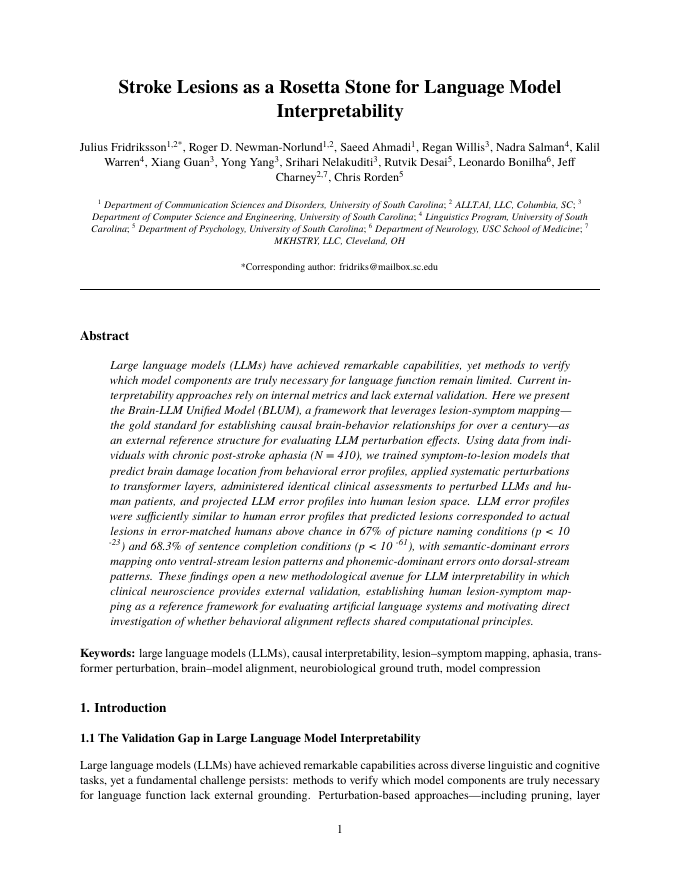
Most of what people see when a paper lands is the result. Most of what built the paper is plumbing. BLUM took roughly six months of architecture work before the first usable result - building a seven-phase pipeline that perturbs a 13-billion-parameter LLM, runs the perturbed model on clinical batteries, fits Symptom-Lesion Models on the 213-patient C-STAR cohort, validates against held-out seeds, and maps everything onto canonical brain ROIs.
The phases ended up being: (1) data ingestion + sanity, (2) seed grid construction across layers and noise levels, (3) parallel LLM perturbation jobs, (4) clinical-battery scoring on the perturbed outputs, (5) SLM regression fitting, (6) cross-validation + permutation null tests, (7) atlas projection + figure generation. Each phase has its own CLI, its own resume semantics, its own logging. If you kill a job halfway through phase 4, you can pick up right where it stopped.
I keep coming back to this principle: spend a disproportionate amount of your time on the boring infrastructure. Every hour of pipeline cleanup pays back tenfold in experimental iteration speed. Most labs underspend here because it's not glamorous and it doesn't have a publication. But the lab that can run an analysis in 20 minutes will out-iterate the lab that needs 3 days, every single time.
2025 · Retrospective
Dietary Fiber, Fiddly Mediation, and the Hippocampus
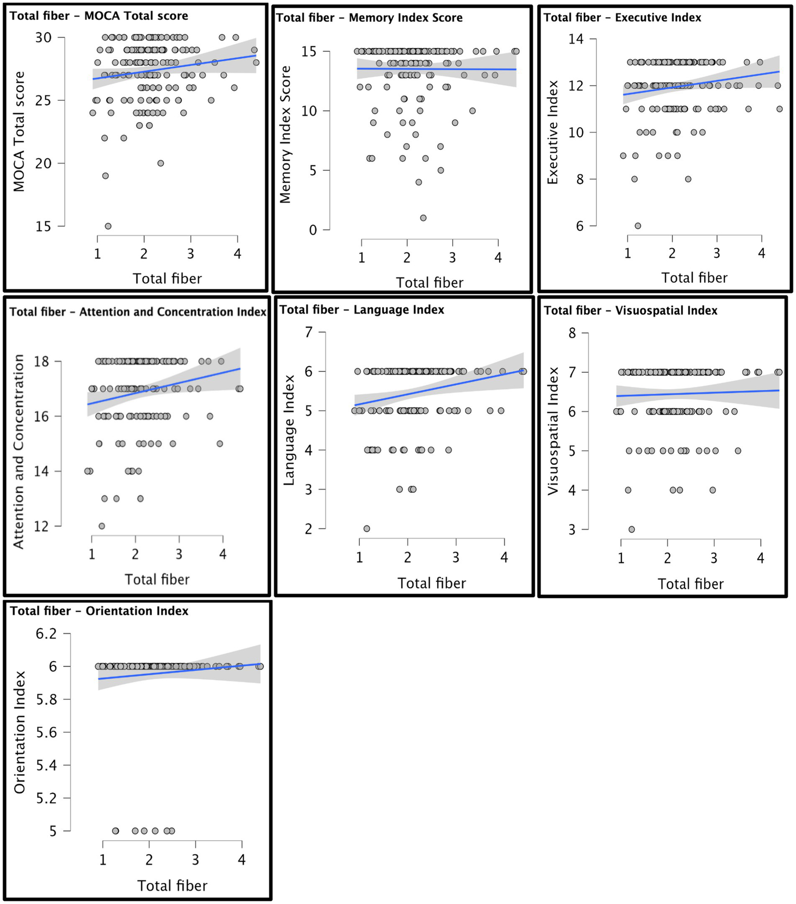
Pallapothu et al. asked a question I would have rolled my eyes at five years ago: does fiber intake predict hippocampal volume in healthy adults? In a sample drawn from the Aging Brain Cohort, the answer was a careful yes - higher dietary fiber tracked larger hippocampal gray matter, even after controlling for the usual demographic suspects. Frontiers in Nutrition, 2025.
Two things make this interesting beyond a single correlation. First, the hippocampal effect was specific - not a global "good food, bigger brain" story, but localised to a region that's both highly metabolically active and unusually sensitive to systemic inflammation. Second, fiber is one of the easier nutritional interventions to actually recommend: it doesn't require an expensive supplement, doesn't have weird side effects, and most adults are massively under-consuming it relative to guidelines.
The paper is part of a broader thread - how non-obvious lifestyle markers (dental health, fiber, social isolation, periodontal disease) connect to brain structure. None of these are bombshells individually. Stacked together, they suggest that brain aging is much more responsive to garden-variety daily decisions than the genetics-dominated story of the 2000s implied.
2025 · Retrospective
Cerebellar Contributions to Apraxia of Speech
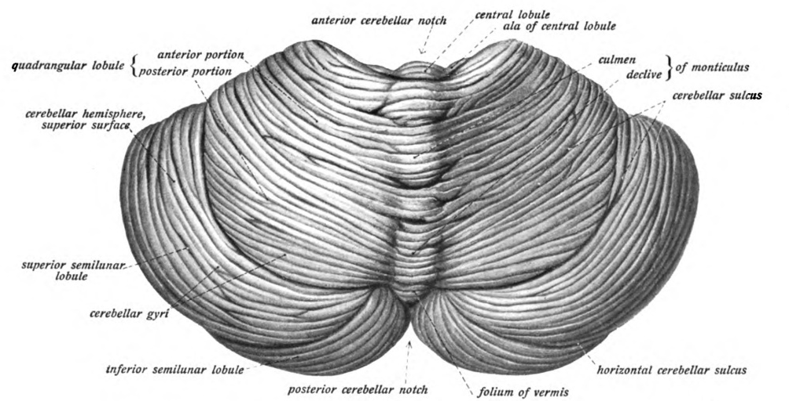
Gibson, Maydeu-Olivares, Newman-Norlund, and Rorden published a piece in Cortex showing that cerebellar atrophy - a region far from any cortical stroke lesion - independently predicts apraxia of speech severity in stroke survivors. It's a continuation of a thread that's surprised the field repeatedly: the cerebellum is involved in language deficits at every level, not just motor coordination.
The classical model treats the cerebellum as a movement-timing structure. The cerebellar contribution to speech is real but conceptualised as motoric - coordination of articulators, timing of syllables. What the lesion-symptom literature increasingly shows is that cerebellar damage produces deficits in the planning of speech, not just its execution. Apraxia is a planning disorder, not a paralysis. The fact that cerebellar atrophy predicts apraxia severity in patients whose primary lesion is cortical means the cerebellum is doing something language-relevant well beyond timekeeping.
The deeper implication is for stim and rehab targeting. If the cerebellum contributes causally, then a treatment plan that only targets perilesional cortex is leaving function on the table. We're starting to see tDCS protocols that include cerebellar montage as part of standard care for apraxia.
2025 · Retrospective
Periodontal Antibodies, APOE4, and the Cognitive Risk Profile
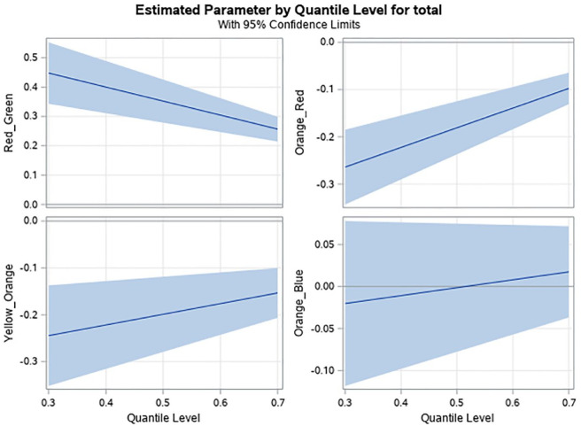
Merchant et al. in Journal of Alzheimer's Disease Reports - an extension of the dental-brain thread we've been building since the 2024 tooth-loss paper. This one looks at antibodies against specific periodontal microorganisms and tests whether their relationship to cognition depends on APOE4 status.
The headline: the cognitive penalty of high antibody load against periodontal bacteria is much larger in APOE4 carriers than non-carriers. APOE4 is the strongest single genetic risk factor for Alzheimer's; periodontal inflammation is one of the more under-appreciated systemic risk factors. The interaction means an APOE4 carrier with chronic gum disease faces a compounded risk that simple additive models would miss.
This is the kind of finding that lives uncomfortably between specialties - dentists don't usually read about APOE, Alzheimer's researchers don't routinely measure periodontal antibodies. The Aging Brain Cohort is built precisely to span those gaps: deep imaging plus deep behavioral phenotyping plus genetics plus a careful clinical health questionnaire. The interesting findings tend to fall in the cracks between disciplines.
2025 · Retrospective
Pulse Pressure, White Matter Hyperintensities, and Cognition Across the Lifespan
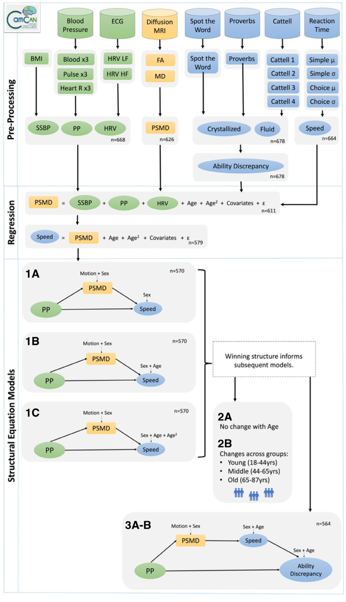
white matter (PSMD) -> cognitive speed across the lifespan" class="blog-img" style="max-width:60%;" />
Hannan et al. in Annals of Clinical and Translational Neurology. The mediation chain we tested: pulse pressure (the gap between systolic and diastolic blood pressure, a marker of arterial stiffness) → white matter hyperintensity load → cognitive performance. Across the adult lifespan, all three legs of that chain held up.
Why pulse pressure specifically? Because mean arterial pressure can look "normal" while the systolic/diastolic gap quietly grows - especially with age. A healthy young vasculature damps the systolic spike between heartbeats; a stiff older vasculature passes the pulse through, and that mechanical hammer is what gradually damages small cerebral vessels. White matter hyperintensities are the visible scar of that damage. They mediate the relationship to cognition because the damaged tissue includes connections between brain regions that need to coordinate for executive function and memory.
Clinical translation: pulse pressure is a $0 measurement. Every patient has one taken at every visit. Most clinicians look at systolic vs. diastolic individually; almost none look at the difference. They should.
2025 · Retrospective
The Aphasia Recovery Cohort Reaches 1,000 Citations
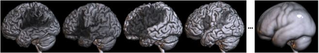
A small milestone marker, but it's worth noting: in early 2025, the Aphasia Recovery Cohort dataset crossed 1,000 citations of work that depended on it. The 2024 Scientific Data paper that released ARC has driven downstream papers on stroke recovery prediction, deep-learning morphometry, lesion-symptom mapping, brain-age estimation in stroke, and methods development that I'd never have thought to do.
This is what open data is supposed to do. When the dataset was just C-STAR's, it generated whatever papers our group could write. Now it generates papers our group can read - with techniques we wouldn't have applied, on questions we hadn't framed. The compounding effect is impossible to engineer through traditional collaboration networks.
The lesson I keep recommending to colleagues sitting on un-released datasets: your dataset's value isn't capped by your group's bandwidth. The opportunity cost of keeping it private is enormous, and almost never visible until you've released something and seen the response.
2025 · Retrospective
The First Symptom-Lesion Model Prototype
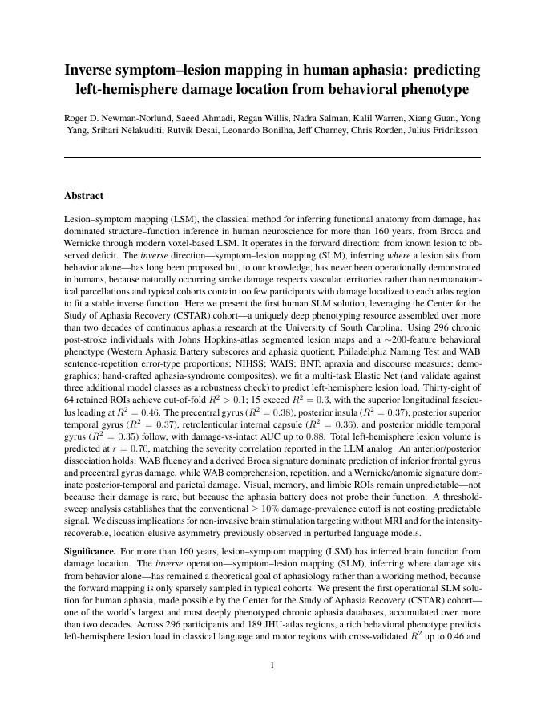
Before the SNL 2026 abstract that put symptom-lesion mapping (SLM) on a formal footing, there was a quieter prototype: a few hundred lines of Python that fit a multi-task Elastic Net from a 200-feature behavioral phenotype to per-ROI lesion-load fractions on a 50-patient subset of C-STAR. It worked, badly, on most ROIs, and well on a handful of perisylvian language regions.
The discouraging part was that for the visual cortex, the prediction was at chance - as it should be, since the behavior we test is language-focused and doesn't probe vision. The encouraging part was that the model was honest enough to tell us when the question didn't have an answer.
That honesty became the implicit negative control we used a year later in the SNL abstract: the parts of the brain you can't predict are evidence that the parts you can predict aren't being predicted because of some artifact. If the model got everything, the result would be suspicious. The model failing at the right places is what made the successes credible.
2025 · Retrospective
FOXP2 and the Genes of Language After Stroke
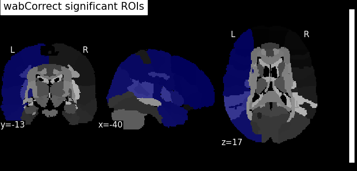
Wilmskoetter et al. led a paper using gene-expression-based lesion-symptom mapping - specifically, mapping FOXP2 expression patterns onto post-stroke language impairment. Journal of Neuroscience, 2026. The idea: regions of the brain that normally express the FOXP2 gene at high levels are the regions whose damage produces the most severe language deficits.
FOXP2 was the first gene reliably tied to a developmental language disorder (the famous KE family work in the early 2000s). What this paper showed is that the brain regions where FOXP2 is most highly expressed are also the regions where stroke produces the worst post-acquisition language loss. The gene marks a "language vulnerability" map at the tissue level - one that pre-dates any individual stroke but predicts how that stroke will manifest.
This is one of those papers where lesion mapping borrows machinery from molecular biology to ask questions neither could ask alone. The cohort had to be big enough to do reliable lesion-symptom mapping, the gene-expression atlas had to be granular enough to overlap with stroke ROIs, and the language phenotyping had to be deep enough to find the subtle deficits. ABC + C-STAR + Allen Brain Atlas is one of the few places that intersection lives.
In 2024 I co-founded allt.ai. Twenty years of academic neuroscience and zero years of running a company. I won't pretend the learning curve has been smooth.
The animating premise is straightforward: the AI industry is mostly trying to make language models more capable by feeding them more data and more compute. The neuroscience community has spent a century studying what an actual functioning language system looks like - how it represents words, what fails when it's damaged, how it recovers. There ought to be useful technology transfer between those two stacks, and almost nobody is doing it deliberately.
allt.ai is the bet that there is. Specific applications I can't talk about publicly yet, but the broad pattern is: use insights from clinical aphasia, lesion-symptom mapping, and brain imaging to build AI tools that are more interpretable, more robust to weird inputs, and better aligned with how humans actually communicate. The BLUM paper is the academic side of that thesis; the company is the commercial side.
The personal pivot is the harder part. Being a co-founder is a totally different job from being a PI - faster cycles, different vocabulary, fewer abstractions, harder accountability. I'll write more about this once there's more to show.
2024 · Retrospective
Hyperdirect-Pathway TMS in Nicotine Dependence
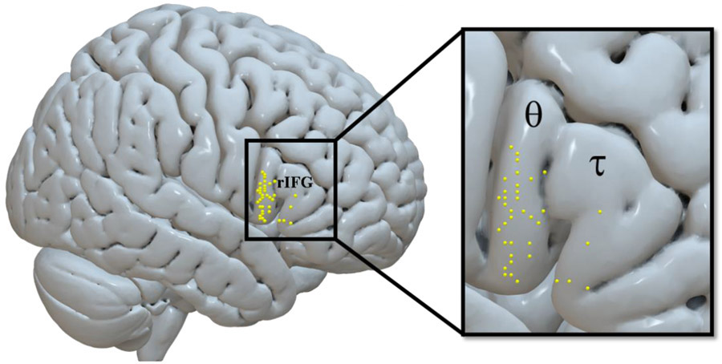
Upton et al. with the Froeliger group - Biological Psychiatry: CNNI 2024. A double-blind randomized crossover trial of theta-burst TMS targeted at the hyperdirect pathway from inferior frontal gyrus to subthalamic nucleus, asking whether stimulating that circuit improves inhibitory control and reduces craving in nicotine-dependent adults.
The answer was a measured yes. The TMS protocol produced reliable improvements in inhibitory control on a stop-signal task, reductions in self-reported craving, and reductions in smoking behavior in the 24 hours after stimulation. The effect sizes are clinically modest but the mechanism story is clean: target the cortical end of a known cortico-subcortical pathway involved in stopping prepotent responses, get a downstream behavioral effect.
This is the kind of translational stim work that makes the case for non-invasive brain stimulation as a real addiction treatment, not just a research curiosity. The harder follow-up question - can this be repeated dose after dose for sustained cessation outcomes - is the trial that the next round of grants is built around.
2024 · Retrospective
Regional Brain Aging Predicts Aphasia Severity
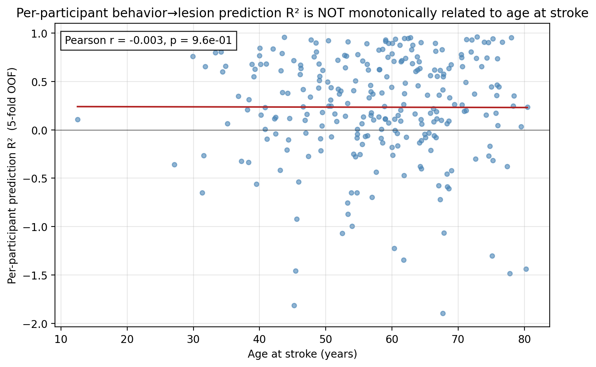
Busby et al. in Communications Biology, 2024. The headline finding: when you compute brain age regionally rather than globally, the domain-general network (frontoparietal control regions, not classical language cortex) is the part that ages prematurely in chronic aphasia and predicts severity beyond what a single whole-brain number can capture.
This was a meaningful conceptual shift for the field. The standard brain-age estimator collapses the whole cortex into one scalar - "your brain looks N years old." Decomposing that scalar regionally reveals something the global number hides: different aphasia patients have different aging signatures, and the signature in the domain-general network does most of the predictive work for severity. Classical language areas matter for where the lesion is; domain-general regions matter for how badly the patient is doing globally.
It's also where the ABC and C-STAR cohorts started cross-pollinating most usefully. ABC trained the brain-age model on healthy adults; C-STAR provided the stroke patients whose deviations from that baseline made the prediction. Two cohorts, one finding.
2024 · Retrospective
Progressive Lesion Necrosis in Chronic Stroke
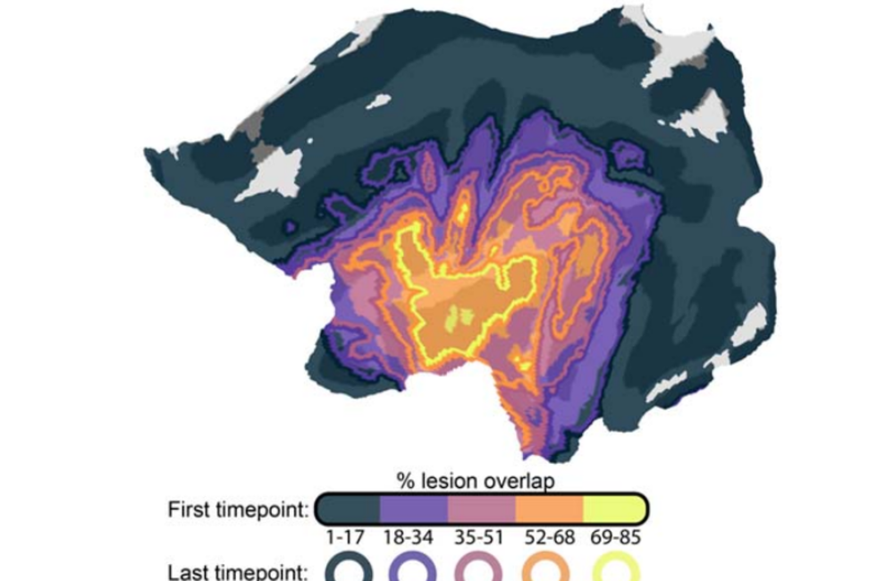
Johnson et al. in NeuroImage: Clinical. A finding that surprised most clinicians I've shown it to: stroke lesions continue to expand over years, even in the chronic state when the acute injury is long since stable. And the expansion correlates with worsening aphasia.
The clinical story has historically been: acute injury, subacute reorganisation, chronic plateau. By six months, you've got whatever recovery you're going to get and the lesion is what it is. What the longitudinal analysis showed is that the "lesion is what it is" part is wrong. Necrotic tissue is biologically active; it continues to die back. Adjacent tissue gradually atrophies. The visible scar on MRI is not a static feature of a chronic stroke patient - it's a slow-moving frontier.
The practical implication is uncomfortable. If lesions keep expanding, then "chronic stroke" is misnamed - you're treating an ongoing pathological process, not the residue of a finished one. Rehab strategies should consider the possibility that the patient is losing function not just because the original lesion is large, but because it's getting larger.
2024 · Retrospective
Diabetes, Brain Health, and Treatment Gains in Aphasia
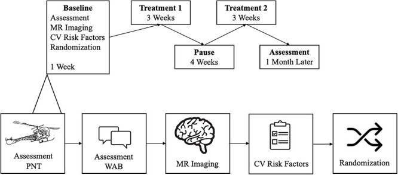
Roth et al. in Cerebral Cortex, 2024. Diabetic stroke patients showed measurably worse brain health markers and reduced treatment-induced language gains compared to non-diabetic patients with otherwise similar lesions. The implication is direct: uncontrolled diabetes is reducing the dose-response curve for aphasia therapy itself.
This is consequential because aphasia therapy is expensive, time-limited, and rationed. If a patient's HbA1c is making them respond half as well to speech-language pathology, that has direct policy implications for what comorbidities should be controlled before therapy starts.
The methodological piece was equally important: controlling for lesion size, age, time-since-onset, education, and baseline severity, the diabetes effect on treatment gains held up. It wasn't a confound - it was an independent contributor. The brain tissue around a stroke responds to treatment, and its responsiveness is degraded by systemic metabolic dysregulation.
2024 · Retrospective
Why We Opened Up Two Stroke Cohorts in the Same Year
This is a retrospective on a quieter milestone that doesn't get talked about as much as it should. In 2024, we released two stroke imaging cohorts as open-source repositories - the Aphasia Recovery Cohort (ARC) for chronic stroke (Scientific Data, 11(1), 981) and the Stroke Outcome Optimization Project (SOOP) for acute stroke (Scientific Data, 11(9), 831). Two different time-points in the stroke trajectory, two different open data resources, same year.
The decision to open them up wasn't obvious from the outside. Both took serious work to assemble - ARC was years of C-STAR enrollments, lesion segmentations, behavioral testing, and quality control. SOOP was 1,714 acute patients with confirmed strokes, MRIs, NIHSS scores, and full clinical metadata, pulled together from a comprehensive stroke center. There's a version of the world where we kept both internal and published every paper we could derive from them ourselves. That's how most groups play it.
We chose the other path for three reasons:
The science moves faster. When the deep-learning morphometry crowd, the brain-age people, the connectomics people, and the clinical-prediction folks all have access to the same well-curated data, they ask questions we'd never have asked. We've already seen this play out - six months after ARC's release, papers we had nothing to do with started landing using it.
Reproducibility is a forcing function. If you know your dataset is going public, you write better preprocessing scripts. You catch the off-by-one errors. You document the things you would have left as tribal knowledge. The papers we wrote from ARC and SOOP after the release are objectively better than the ones we wrote before, because the pipeline had to survive contact with strangers.
The patients deserve it. Every person in those datasets gave consent and gave time. Locking the data in a vault means their contribution maxes out at whatever our group can extract from it. Opening it up means hundreds of researchers can each get a sliver of value, and a few of them will find something we missed.
Both datasets live on OpenNeuro (SOOP at ds004889, ARC at a sibling dataset) with full BIDS structure, scripts, and minimal-working-example demo repos on GitHub. If you're doing any kind of stroke imaging work and haven't pulled them down yet, you're working harder than you need to.
The companion philosophy - release the data, release the tools, release the analysis code - is also why Brainchop, NiiVue, ezBIDS, and dcm2niix have all been part of my recent NIH grants. Open infrastructure is what makes open data actually useful. I'm planning to write more about that thread separately.
2024 · Retrospective
Teeth Predict Your Brain: The Santosh Paper
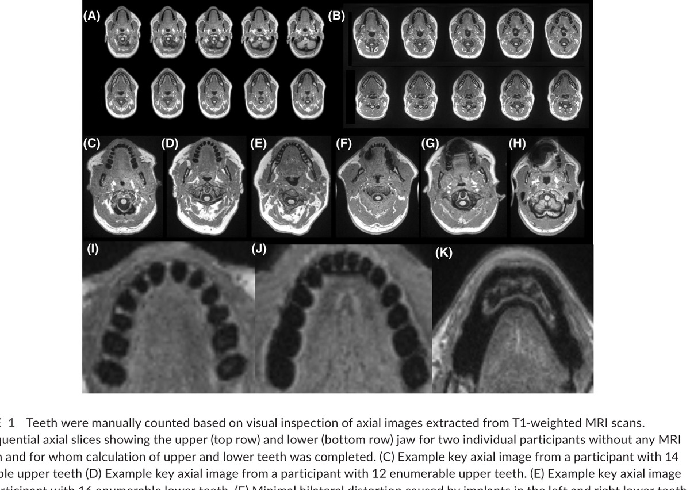
Newman-Norlund, Kudravalli, Merchant, Fridriksson, Rorden - Journal of Periodontal Research, 2024. The undergraduate first-coauthor, Santosh Kudravalli, had a question I would have dismissed if a senior researcher had brought it to me: "do people with more tooth loss have worse brain health?"
I almost said no. Tooth loss isn't a brain variable; it's a dental one. But Santosh had a hypothesis about chronic inflammation as a shared cause and the patience to actually look. Using the ABC cohort with both dental records and structural MRI, we tested the relationship across multiple brain regions, controlling for age, sex, and the usual confounds. The signal held. Greater tooth loss tracked with worse global brain age and worse cognitive scores, beyond what general health markers explained.
The paper became the first in a small thread - the periodontal antibody paper, the broader dental-cognition links - that we're now writing as a series. The mentoring lesson is the one I keep relearning: undergrads ask questions that don't fit my priors, and that's exactly when they're useful. Santosh asked a "wrong" question. The wrong question turned out to be right.
2024 · Retrospective
Cerebellar Atrophy and Language Processing in Chronic Stroke
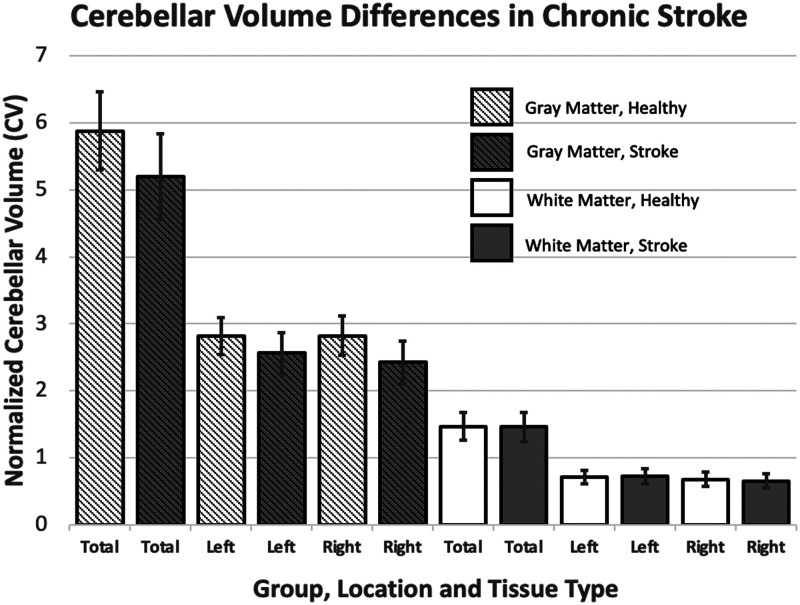
Newman-Norlund, Teghipco, Johnson, Gibson, Bonilha, Rorden, Fridriksson - Neurobiology of Language, 2024. My first first-author paper in a while, focused on a structure that nobody had been looking at carefully in chronic left-hemisphere stroke: the cerebellum.
The setup is intuitive. Chronic left-MCA stroke devastates left perisylvian cortex; that's where everyone looks. But the cerebellum is connected to those regions via the cortico-ponto-cerebellar pathway and reciprocally projects back via the dentato-thalamo-cortical pathway. If the cortical end gets damaged, the cerebellar end should atrophy from disuse / disconnection - and if the cerebellum is doing real linguistic work, that atrophy should hurt language.
Both parts of the story held up. Cerebellar gray matter volume was significantly reduced in chronic stroke survivors compared to age-matched controls, particularly in cerebellar regions known to project to language cortex. And that reduction predicted aphasia severity over and above the cortical lesion size. The cerebellum isn't a passive bystander in language; it's an upstream contributor whose health matters.
2024 · Retrospective
NiiVue and the Cloud-Friendly Neuroimaging Toolchain
A note about why my recent NIH grants have a "tools" line item that probably looks weird to grant reviewers: open neuroscience runs on shared infrastructure. NiiVue (web-based neuroimaging visualization), dcm2niix (DICOM → NIfTI conversion), ezBIDS (cloud-friendly BIDS conversion) - these aren't side projects. They're the connective tissue that makes the open data work.
We're a co-investigator on NIH R01MH133701 ($2.1M, PI Rorden) explicitly for extending those tools. The grant structure is unusual: most NIH money goes to discovery work, but a real fraction of what makes discovery work possible is mundane plumbing - can a researcher load a NIfTI file in a browser, can they convert DICOM to BIDS without writing a script, can they share the result with a collaborator who's not a neuroimager.
The bet is that funding this infrastructure pays off across the field. Every paper that uses ARC or SOOP downstream is using these tools. Every clinical center that exports MRI data for research is hitting this stack. Open infrastructure is the multiplier that makes open data actually accessible.
Plis, Masoud, Farfalla, Hanayik, Ghosh, Drake, Newman-Norlund, Rorden - Aperture Neuro, 2024. Brainchop is a project I'm proud of in a way that's hard to convey in a publication: it puts neural-net brain segmentation in a web browser, with no server, no install, and no data transfer.
The model runs on the user's machine via WebAssembly. The patient's MRI never leaves their computer. The output - cortical parcellation, subcortical segmentation, lesion detection - is generated locally in a few seconds. That's a privacy story and an access story: a small clinic anywhere in the world with a laptop and a browser can do segmentations that previously required a $10K workstation and a sysadmin.
The underlying engineering challenge is making the model small enough to fit in a browser tab while maintaining clinical accuracy. The team's compromise is a smaller, faster, mostly-as-good model rather than a state-of-the-art research model that needs a GPU. For 90% of users, "mostly as good" is the right tradeoff.
2024 · Retrospective
Deep Learning Morphometry Predicts Aphasia Severity
Teghipco, Newman-Norlund, Fridriksson, Rorden, Bonilha - Communications Medicine (Nature), 2024. The premise: skip the hand-crafted features. Feed raw structural MRI from chronic stroke patients into a 3D CNN and ask it to predict aphasia severity directly, with no a priori atlas, no lesion drawing, no ROI selection.
The model outperformed classical lesion-volume-based prediction substantially. The interesting part was the saliency maps: the network had learned to attend to specific perilesional and contralateral regions that conventional analysis would have averaged away. The CNN was telling us not just how severe the deficit would be, but where to look for the predictive signal in the brain.
This was a generation-of-tools moment as much as a generation-of-results moment. The pipeline became a template for subsequent papers that use deep morphometry as a phenotype rather than a black box. If you can extract a 128-dimensional representation from a patient's MRI that predicts aphasia, you can use that representation as a feature for everything downstream - brain-age prediction, treatment-response forecasting, subtyping.
2024 · Retrospective
Before BLUM: Lesioning GPT-2 in My Spare Time
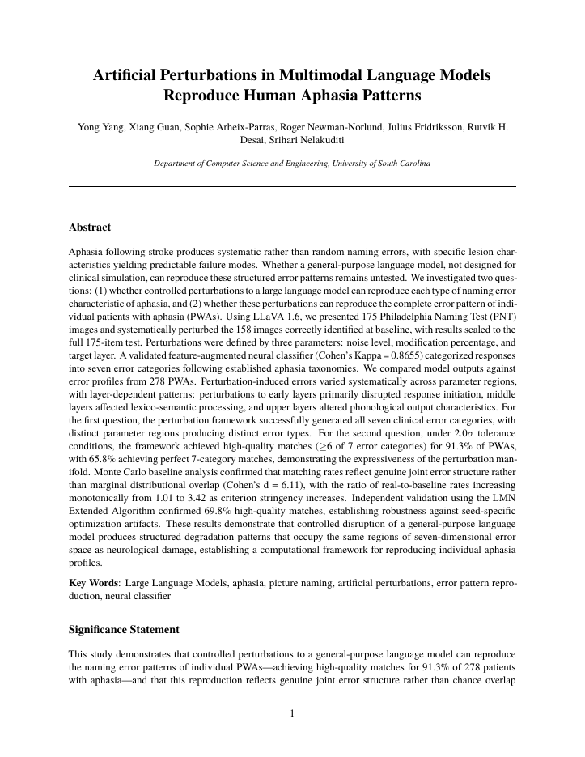
Long before BLUM was a paper under review at a Nature-family journal, it was a folder on my desktop called WAB_Sentence_Completion_Playground with a Python script that loaded GPT-2 from Hugging Face and zeroed out random transformer layers to see what happened.
The premise was simple to the point of feeling silly. People with strokes in left perisylvian language regions make characteristic errors when they try to speak - semantic substitutions ("dog" for "cat"), phonemic distortions ("tat" for "cat"), neologisms, perseverations. If you damage a transformer language model in the wrong places, does it make similar errors? Or does it just produce garbage that has nothing to do with the clinical phenomenology?
I ran the first experiments on a personal laptop, in the evenings, with no real plan beyond curiosity. The script let me pick a layer (0–47 in GPT-2 XL), pick a perturbation type (zero out, add Gaussian noise, scale weights), and run a sentence completion task that mirrored what we ask aphasic patients to do. I printed the model's outputs alongside the layer/perturbation parameters and looked for patterns.
The first surprising result: perturbations in early layers and late layers did different things. Damage to layers near the embedding produced word-form errors (real-word-but-wrong, like phonemic substitutions in humans). Damage to layers near the output head produced semantic substitutions (right form, wrong meaning - like Wernicke-style errors). The middle of the model was somewhere in between, and adjacent layers gave broadly similar profiles - suggesting a depth-organised function gradient rather than discrete modules.
That observation sat in the back of my head for about a year while I worked on other things. Then a few realisations clicked together:
The Center for the Study of Aphasia Recovery has the largest deeply-phenotyped chronic stroke cohort in existence (~300 patients with both MRIs and detailed error-category counts).
We had Symptom-Lesion Models trained on that cohort - given a behavioral error profile, predict where the lesion is in the brain.
If you apply those same models to the error profiles of a perturbed LLM, you get a predicted brain lesion location for the LLM perturbation.
If the LLM's organisation is brain-like, the predicted lesion location should be at a brain location anatomically analogous to the perturbation layer.
That fourth bullet is what became BLUM. The hobby project became a real paper because it stopped being "let's poke an LLM and see what happens" and started being "let's use a century of clinical lesion data as external ground truth for LLM interpretability."
I tell the origin story for a reason: most of the projects I'm proudest of started as something I built on a Tuesday night because I was curious, not because there was a grant attached or a paper milestone to hit. The grants and the papers came later, once the playground produced something worth publishing. Build the playground first. The hard part of doing science isn't getting an idea past peer review - it's having an idea worth pursuing in the first place, and that almost never happens on demand.
The original WeightPerturbation and WAB_Sentence_Completion_Playground repos are still on my machine, gitignored to private GitHub backups. Some of the original scripts are now buried inside the BLUM pipeline, refactored beyond recognition. The playground became the paper, and the paper became a thread that's still running.
2023 · Retrospective
Advanced Brain Age and Chronic Poststroke Aphasia Severity
Busby et al. in Neurology, 2023 - the highest-profile journal in clinical neurology. The finding: chronic post-stroke aphasia patients with older-looking brains had worse aphasia severity, even after controlling for lesion size, age, and education. Brain age wasn't just a global descriptor; it was a clinically actionable severity predictor.
The paper landed at a moment when the field was starting to take brain age seriously as a biomarker. What our study added was the demonstration that the same number predicting Alzheimer's risk in healthy populations also predicts aphasia severity in stroke populations - suggesting a shared neurobiological substrate of brain reserve / vulnerability that cuts across diagnostic categories. The deeper claim: there isn't a separate "stroke brain age" and "Alzheimer's brain age." There's just brain age, and it matters everywhere.
2023 · Retrospective
Socioeconomic Status Predicts Premature Brain Aging
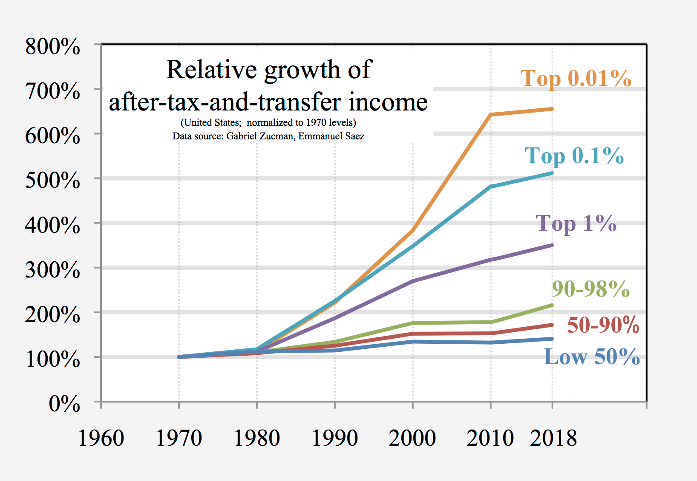
Busby et al. in Neurobiology of Aging, 2023. Lower-SES participants in the Aging Brain Cohort had brains that looked older than their chronological age, controlling for cardiovascular risk and other confounds. SES wasn't just a downstream proxy for health behaviors - it had an independent association with brain morphology.
This is one of the harder findings to discuss in policy terms because it implicates the structural factors of poverty, not just the individual ones. You can recommend that someone exercise more or eat better. You can't recommend that they have a higher income. If the relationship between SES and brain aging is causal in any direction, the intervention isn't medical - it's structural. That's an uncomfortable conclusion for a biomedical research program to land on, but the data are what they are.
2023 · Retrospective
White Matter Hyperintensities Mediate Age and Cognition
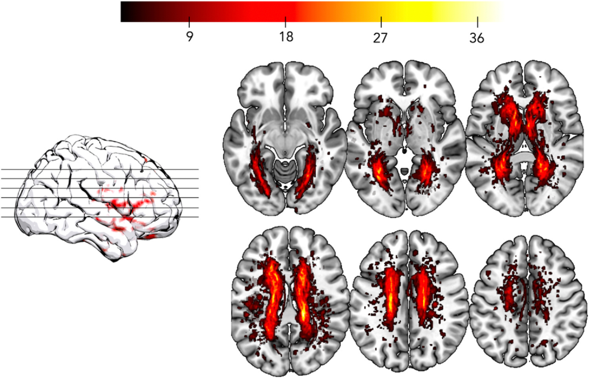
Another Busby paper, same year, Neurobiology of Aging. The mediation analysis question: does the relationship between age and cognition go through white matter hyperintensity load? The answer was yes - a substantial fraction of the age-cognition correlation is statistically accounted for by WMH burden.
This matters because age itself isn't a treatable variable. WMH load is. If WMH mediate most of the age-cognition link, then interventions that reduce WMH accumulation (blood pressure control, glucose control, sleep, vascular fitness) are also interventions on cognitive aging. The mediation chain turns "you're getting older" into a list of concrete clinical levers.
2022 · Retrospective
Predictors Beyond the Lesion
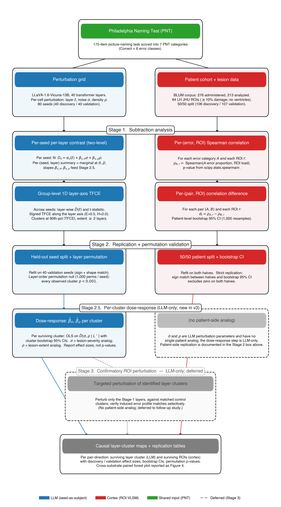
Johnson, Nemati, Bonilha, Newman-Norlund, Hillis - Cortex, 2022. The premise was unflashy: the field's lesion-symptom-mapping tradition treats the lesion as the dominant predictor of aphasia severity. Demographic and health variables get controlled for as nuisance covariates. What if some of them are actually doing real predictive work?
They are. Age, education, time post-onset, and several health measures collectively explain a sizeable chunk of variance in aphasia severity that lesion size alone doesn't reach. The deeper implication is that "the lesion explains the deficit" is a half-truth; the deficit is a joint function of the injury and the substrate it landed on.
2022 · Retrospective
Social Isolation and Quality of Life in Older Adults
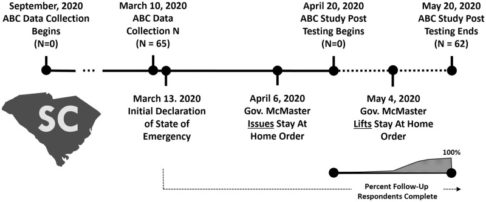
Newman-Norlund (R.D.), Newman-Norlund (S.E.), Sayers, McLain, Riccardi, Fridriksson - PLoS ONE, 2022. A paper I co-led with my wife Sarah, looking at how social isolation tracks with quality-of-life measures in the ABC cohort of older adults. Pandemic-era data; the question had real urgency.
The finding was unsurprising in direction but stark in magnitude: socially isolated participants reported substantially worse quality of life across multiple dimensions, beyond what you'd predict from their physical health alone. Loneliness is its own variable, with its own clinical relevance, and it's underweighted in standard geriatric assessment.
2022 · Retrospective
Brain Age Predicts Long-Term Recovery in Aphasia
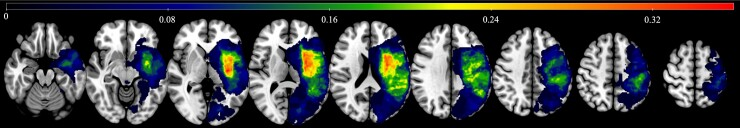
Kristinsson et al. in Brain Communications, 2022. Prospectively, brain age at baseline predicted who recovered language abilities over a year of follow-up - with younger-looking brains doing measurably better. The point was that brain age isn't only a snapshot of vulnerability; it's a prognostic for trajectory.
The clinical implication is the one I keep returning to: knowing a patient's brain age changes the conversation with their family about expected recovery. It doesn't change what treatment you offer, but it changes the prognostic framing - and prognostic framing is, in practice, what families and patients want to know.
2022 · Retrospective
Building a Foundation for Personalized Aphasia Therapy
Kristinsson, Den Ouden, Rorden, Newman-Norlund, Niels-Strunjas, Fridriksson - Journal of Stroke, 2022. A review-and-perspective piece making the case for predicting therapy response in chronic aphasia: who will benefit from which treatment, given which brain and behavioral profile?
The honest framing is that the field is early. Aphasia therapy is mostly delivered one-size-fits-most. The infrastructure to do real personalization - large enough cohorts, deep enough phenotyping, treatment trials with adequate variance to fit response models - barely exists. C-STAR is one of the few places it's being built. The paper is partly a results piece, partly a roadmap for what the next ten years of personalized aphasia care should look like.
2022 · Retrospective
FMR1 and Motor Function in Older Adult Women
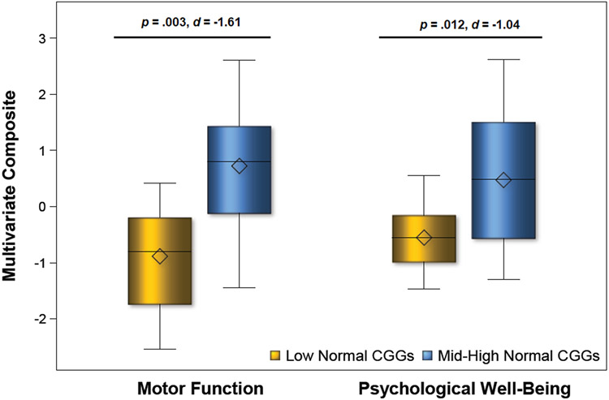
Klusek et al. in Archives of Gerontology and Geriatrics, 2022. The paper looked at "low-normal" FMR1 genotype - CGG repeat lengths near but not above the premutation threshold - and asked whether they correlated with motor function and psychological well-being in older women.
FMR1 is famous for Fragile X (full mutation) and FXTAS (premutation). The "normal" range gets less attention. What the paper showed was that even within the normal range, repeat-length variation tracked subtly with motor and affective measures. The implication is that "Fragile X is binary" undersells what's likely a continuous gene-dose effect with consequences at every level of the CGG distribution.
2022 · Retrospective
What "Brain Age" Means and Why It Matters
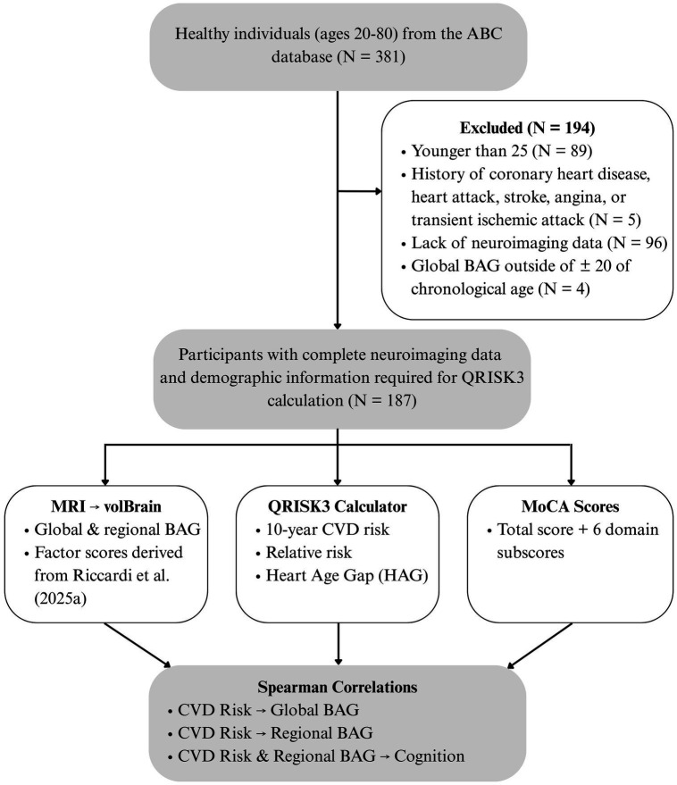
A quick primer post for anyone showing up to my blog and wondering what "brain age" actually means, since it appears in roughly half of what I've published in the past five years.
You train a machine-learning model (we usually use XGBoost on ~1,000 morphometric features per subject) to predict a person's chronological age from their brain MRI. The model learns the typical structural signatures of healthy aging across hundreds of training subjects. On a new patient, the model spits out a predicted age. The difference between predicted and chronological is the brain age gap (BAG).
BAG > 0 means your brain looks older than your years. BAG < 0 means it looks younger. The cleverness is that BAG ends up being a sensitive marker of all sorts of insults - cardiovascular risk, stroke, neurodegeneration, even sleep loss - even though the model was never trained to detect any of them. It's a generic "is something going on" canary. Most of my brain-aging papers are some version of "does X predict BAG" or "does BAG predict Y."
2022 · Retrospective
Becoming a Research Associate Professor in Psychology
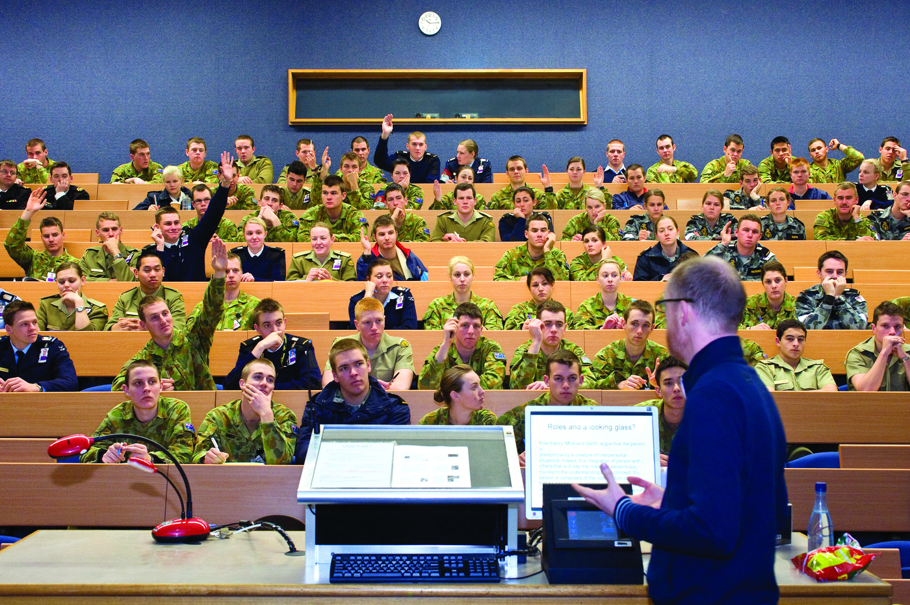
In February 2022 I officially moved from Research Associate to Research Associate Professor in the Department of Psychology at USC. A title change with real implications: more autonomy over what I work on, more grant-writing responsibility, more graduate advising, less protected service time.
The career stage I was already operating in pretty much demanded the change. McCausland Center director, ABC director, C-STAR co-investigator on multiple R01s. The "associate" title from earlier didn't reflect the day-to-day. Promotion is mostly a paperwork acknowledgment of work already happening.
2021 · Retrospective
COVID-19 and Personal Narratives: What Sentiment Looks Like in a Lockdown Year
When the pandemic hit in 2020 and our in-person ABC visits paused, we pivoted to remote narrative recording - participants telling personal stories over Zoom that we could analyze for sentiment and discourse markers. The data became the seed of what's now a full manuscript on sentiment as a marker of mental wellness and cognition.
The deeper opportunity was scientific, not just logistical. A "personal narrative" is one of the densest behavioral measurements available - emotional content, lexical diversity, discourse coherence, syntactic complexity all happening in 90 seconds of speech. We started this with COVID as the motivating context but the methodology generalises to any clinical population where you can record a story.
2021 · Retrospective
Speech Entrainment and Cortical Connectivity in Non-Fluent Aphasia
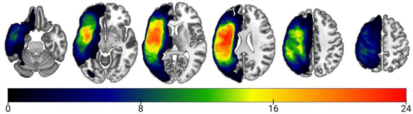
Johnson, Yourganov, Basilakos, Newman-Norlund, Thors, Keator, Rorden, Bonilha, Fridriksson - Neural Rehabilitation and Repair. Speech entrainment is a therapy where patients with non-fluent aphasia "ride along" with a model speaker, producing speech they otherwise couldn't. The neural correlate question was: what happens in their cortex when this works?
The answer: improved functional connectivity between anterior and posterior speech regions after therapy. The patients who responded behaviorally showed strengthened communication between Broca-territory regions and posterior temporal language areas. The intact tissue learns to coordinate better, and that coordination is what scales speech production back up.
2021 · Retrospective
Releasing the ABC Repository
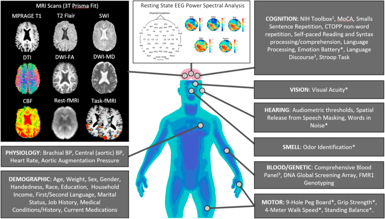
Newman-Norlund (R.D.), Newman-Norlund (S.E.), Sayers, Nemati, Riccardi, Rorden, Fridriksson - NeuroImage: Reports, 2021. The data-paper for the Aging Brain Cohort: who's in it, what was measured, how to access it. The first deliberate open-data release from our group, two years before the ARC and SOOP releases.
It set the template we'd later use for the stroke datasets: full BIDS structure, scripts, demo notebook, clear data dictionary, controlled-access pathway for the sensitive fields. The paper itself isn't full of new discoveries - it's an infrastructure announcement. But it's been more useful as a citable resource than most of my discovery papers, because every subsequent ABC paper points to it.
2020 · Retrospective
Concussion: DTI White Matter and EEG Markers Agree
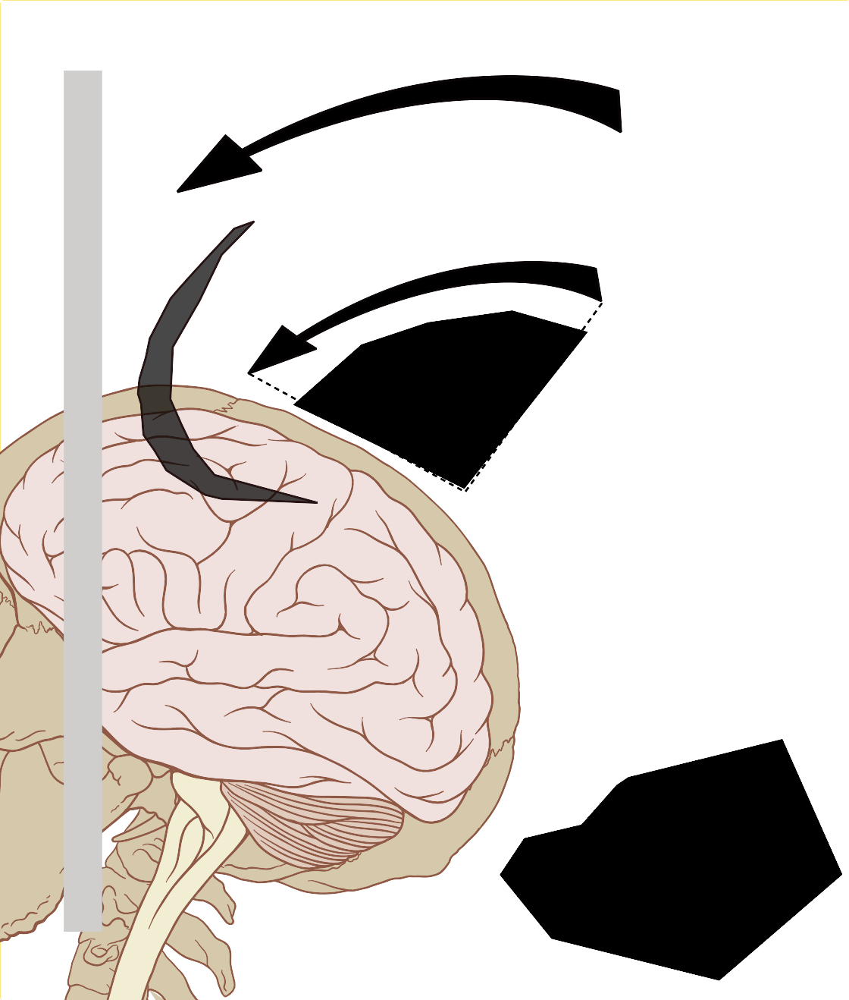
Wilde, Goodrich-Hunsaker, Ware, Taylor, Biekman, Hunter, Newman-Norlund, Scareo, Casa, Levin - Journal of Neurotrauma, 2020. Slow-recovering concussed collegiate athletes showed DTI markers of white matter injury that correlated with an independent EEG-based biomarker. Two very different modalities, converging on the same patients.
This matters for sports-concussion management because the field has historically struggled to find objective markers that don't rely on symptom self-report. When DTI and EEG agree, the case for an actual underlying pathophysiology becomes much stronger than either modality alone makes.
2020 · Retrospective
Theta-Burst TMS to IFG: A Dissociable Effect on Inhibitory Control
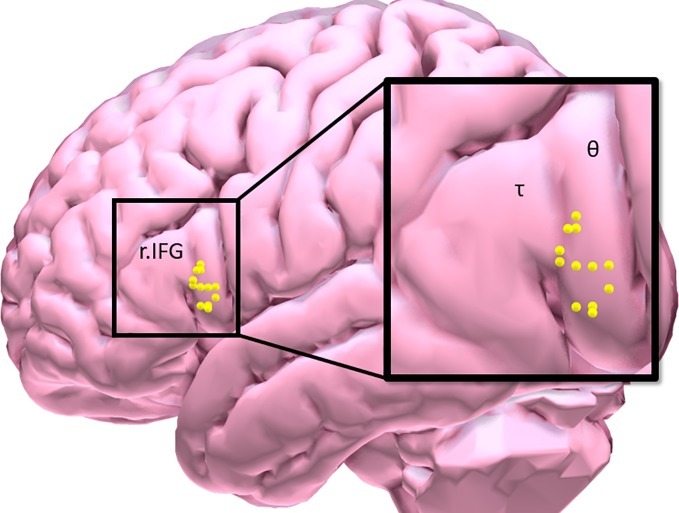
Newman-Norlund, Gibson, McConnell, Froeliger - Frontiers in Psychiatry, 2020. The first big collaboration with Brett Froeliger using theta-burst TMS targeted at the inferior frontal gyrus to modulate inhibitory control in adults with nicotine dependence.
The interesting design choice was using both excitatory and inhibitory theta-burst protocols. If IFG was the right target, the two protocols should produce opposite effects on inhibitory control performance. That dissociation is what landed - excitatory iTBS improved stop-signal performance, inhibitory cTBS degraded it. The doubly dissociable effect is the methodological cleanness that lets you claim causality for the brain target. This became the foundation for the 2024 hyperdirect-pathway clinical trial.
2020 · Retrospective
Sphenopalatine Ganglion Blocks and Chronic Migraine
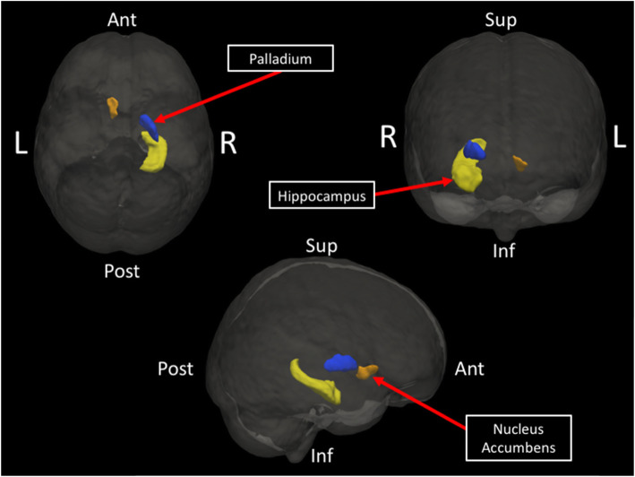
Newman-Norlund, Rorden, Maleki et al. - Women's Midlife Health, 2020. A small longitudinal study tracking cortical and subcortical changes following sphenopalatine ganglion blocks in chronic migraine with medication overuse. The clinical intervention is anesthetic; the question was whether the brain shows it.
It does. Pre/post imaging revealed structural and connectivity changes in pain-processing regions, on the same timeline as patients' reported relief. The paper's value was less about the specific clinical claim and more about establishing that the imaging substrate of chronic migraine is dynamic - not just a fixed biomarker of disease state.
2019 · Retrospective
Building the Aging Brain Cohort From Scratch
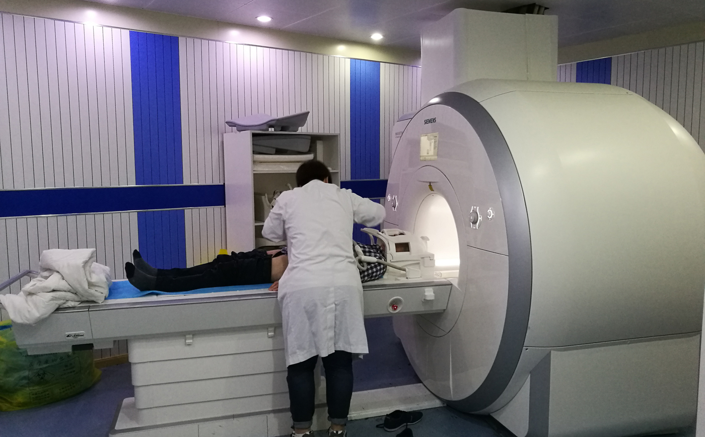
In August 2019 the USC Excellence Initiative funded the Aging Brain Cohort at $3.25M with Julius Fridriksson as PI and me as Project Director. I'd been hired to build it. The blank-page version of "go assemble a multimodal lifespan brain-aging cohort at USC" was both exciting and slightly terrifying.
The build had three hard parts that look obvious in hindsight: (1) deciding which behavioral and questionnaire instruments to administer at every visit (the curse of choosing makes you wish for an organizing principle - we ended up using the NIH Toolbox + Cognitive Function Composite + a tailored health questionnaire), (2) designing an MRI protocol that would hold up for a decade of cross-cohort comparison (no clever sequences, all field-standard), and (3) recruiting hundreds of healthy older adults from Columbia, SC to come spend a half-day in an MRI scanner for modest compensation.
Six years later the cohort is 600+ participants deep, generates 5–10 papers per year, and feeds essentially every brain-aging story I work on. The "build the playground first" lesson cuts both ways - sometimes the playground is a side project, sometimes it's the institutional infrastructure that takes years to stand up.
2019 · Retrospective
Why USC Needed a Lifespan Brain Database
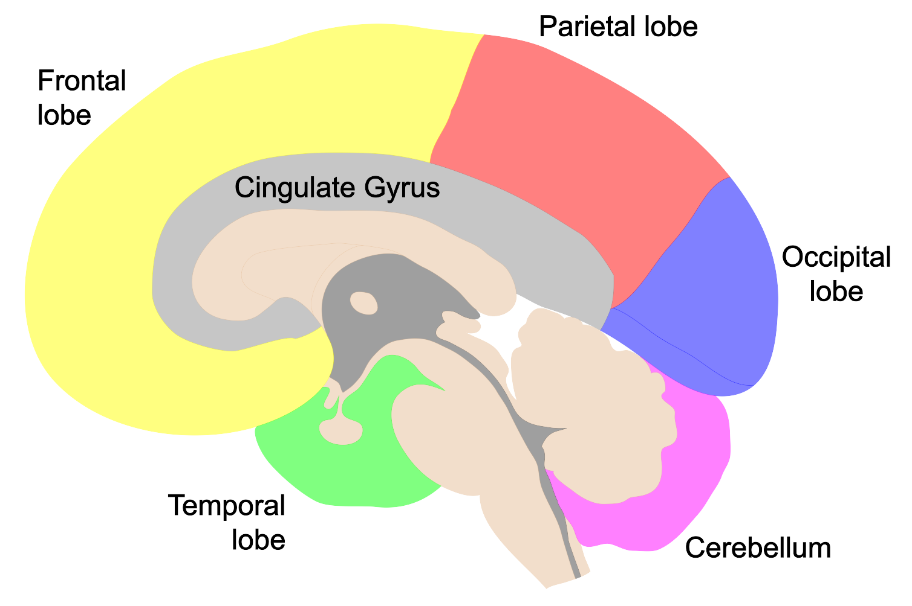
The companion question to "we built ABC" is "why USC needed it." There were big cohorts in existence - UK Biobank, Lifebrain, Cam-CAN, ADNI. We weren't going to out-scale any of them.
What we could do was build something deeper than wider. ABC participants come in for hours, not minutes, and we collect MRI, multiple cognitive instruments, genetics, dental health, dietary assessment, social-network questions, cardiovascular metrics, the personal narratives that became the sentiment paper. Most large cohorts trade depth for breadth. ABC trades the other way. It's a hundred participants is per researcher rather than ten thousand participants per researcher - but each participant tells you ten times as much.
2018 · Retrospective
Cigarette Warnings Revisited: Novel vs. Repeated
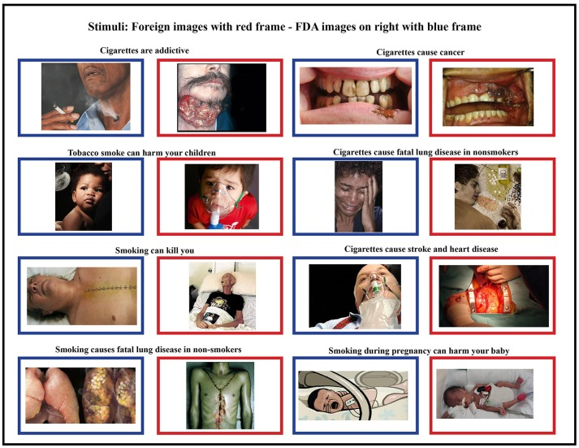
Fridriksson, Rorden, Newman-Norlund, Froeliger, Thrasher - Frontiers in Psychiatry, 2018. A follow-up to our cigarette health-warning-label work asking the natural next question: when smokers see the same warning label repeatedly, does the brain habituate?
The answer was yes, with implications for policy. Repeated exposure to identical pictorial warnings reduced their neural impact on regions associated with affect and self-relevance. The takeaway is that public-health communication built around a fixed set of warning labels has a built-in shelf life - cycling new labels through the rotation isn't just a graphic-design preference; it's likely necessary to maintain the deterrent effect.
2018 · Retrospective
Chronic Migraine and the Default Mode Network
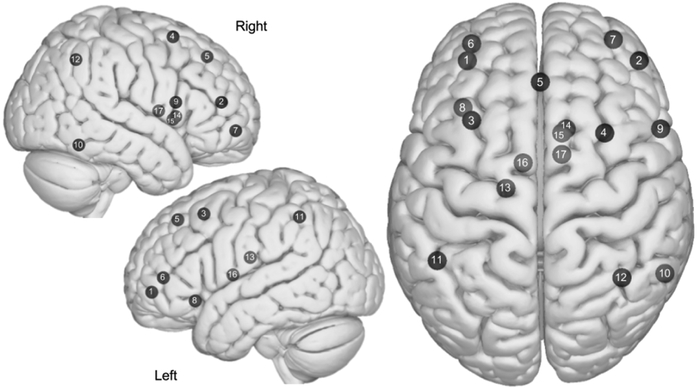
Androulakis, Krebs, Finkel, Rorden, Newman-Norlund, Jenkins, Maleki - Journal of Neurological Disorders, 2018. The intra-network connectivity of the central executive and default mode networks is altered in chronic migraine, in ways that don't map onto a simple "more" or "less" story - the rebalancing is selective.
This was part of an emerging picture that chronic pain disorders aren't just disorders of pain processing; they're disorders of the broader resting-state architecture. The default mode network in particular, which is supposed to deactivate during tasks, doesn't deactivate normally in chronic pain patients. The pain becomes the task.
2017 · Retrospective
Supraspinal Fatigue Has a Cortical Address
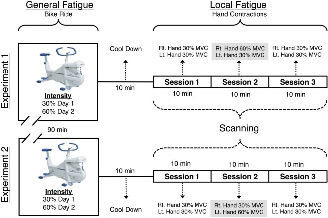
Herath, Carmichael, Murphy, Bonilha, Newman-Norlund, Rorden, Davis - Frontiers in Neurology, 2017. Exhaustive aerobic exercise produces a kind of "central" fatigue that's distinct from peripheral muscle fatigue. The question was whether this central fatigue has a localizable cortical signature.
It did. A large activation cluster in anterior premotor cortex appeared post-exhaustive-exercise and was specific to the supraspinal-fatigue state. The implication is that there's a brain region whose job is to track "we are tired beyond the muscles' ability to do more work," and that the felt experience of exhaustion is partly a cortical decision rather than a peripheral signal.
2017 · Retrospective
TMS to Inferior Frontal Gyrus in Nicotine Addiction: Building the Translational Stack
The Froeliger collaboration officially started around 2017 - before the 2020 Frontiers in Psychiatry paper, before the 2024 hyperdirect-pathway trial. The premise was that the IFG is a critical node in the brain's stopping system, that nicotine dependence is partly a failure of stopping, and that modulating IFG should therefore modulate craving and behavior.
That premise had to be tested in a careful sequence: (1) does TMS to IFG actually change inhibitory control behavior, (2) does it do so with the expected directional dissociation (excitatory vs. inhibitory protocols), (3) does the behavioral change transfer to addiction-relevant tasks, (4) does it transfer to smoking outcomes in patients. The translational stack took seven years to climb, and 2017 was its first step.
2017 · Retrospective
Where I Stopped Being an Exercise Scientist
In August 2017 I moved from Exercise Science to Psychology and became the Managing Director of the McCausland Center for Brain Imaging. The shift was bureaucratic on paper and intellectually substantial in practice: I'd been doing neuroimaging in an exercise-science department for eight years, sometimes against the grain of what the department was set up to support.
The Psychology move put me closer to the C-STAR aphasia group, closer to the imaging infrastructure I'd been borrowing, and closer to the clinical research community at the medical school. It also meant graduating from "the exercise person who does brain stuff" to "the brain person who used to do exercise stuff." The work didn't change overnight, but the institutional fit did.
2016 · Retrospective
Joining the McCausland Center for Brain Imaging
The transition into the McCausland Managing Director role wasn't a single moment - it built across 2016 as the previous director rotated out and I started taking on more operational responsibilities. Running an MRI center is a different job from running a research program: facility maintenance, staff management, billing, scheduling, IT, MR-safety officer responsibilities, vendor relationships.
What I learned, mostly the hard way, is that operations are a craft. The questions that determine whether the center serves its researchers well are not the same questions that determine whether a paper gets into a good journal. The MRI scanner is up 99% of the time or it isn't. The data flows out into BIDS structure on the first try or it doesn't. The lab manager has clear procedures or doesn't. Each of those is its own optimization problem and they all have to be solved at once.
2015 · Retrospective
Imagery and Inter-Individual Differences
Seiler, Monsma, Newman-Norlund - JSEP, 2015. Movement imagery ability varies substantially between people, but until then nobody had shown that the brain signatures of imagery differed reliably as a function of individual ability. The paper showed they do.
This matters for sports psychology, motor rehab, and any clinical application that relies on imagery as a treatment component. If a patient is a "good imager," the protocol works; if they're not, you need a different intervention. Validating the ability scale against brain measures gives clinicians an objective way to pick.
2015 · Retrospective
Predicting Smoking Behavior From Brain Response to Warnings
Riddle, Newman-Norlund, Thrasher - the smoking-prediction paper that landed in Social Cognitive and Affective Neuroscience in 2016 but did its experimental work in 2015. The finding: neural response to pictorial cigarette warning labels predicted real behavior change in the weeks and months following the scan.
This was the validation step the health-warning-label thread needed. It's one thing to show that the brain responds to scary cigarette labels - of course it does. The harder claim, and the one that matters for policy, is that the response is predictive: smokers whose amygdala lit up more in the scanner went on to smoke less. We could now make the case that label design changes wouldn't just look meaningful in fMRI; they'd translate to behavior at scale.
2015 · Retrospective
NYSCATE Keynote: Technology and Special Education
In October 2015 I keynoted the New York State Conference on Assistive Technology and Education (NYSCATE). The talk was titled "At the crossroads of technology and special education: A role for serious games in serious education."
Two things made this memorable. First, the audience was K-12 special-ed teachers, not academic neuroscientists - a different rhetorical universe where citations don't carry weight but classroom relevance does. Second, the talk was about something I genuinely cared about: that the gamification work I'd been doing with undergrads on social-cognition tasks could be applied to autism and learning-disability classrooms, and that the path from neuroscience research to classroom tool was much shorter than people thought.
2014 · Retrospective
Smiles Count But Minutes Matter: Classroom Exercise Breaks
Erin Howie, Newman-Norlund, Pate - American Journal of Health Behavior, 2014. The title was the finding: teacher and student engagement during in-classroom exercise breaks matters less than the duration of the breaks for cardiovascular benefit.
The pragmatic implication for schools was clean: don't worry about whether kids are smiling or whether the teacher is fully enthusiastic; just protect the duration. Three minutes of moderate activity does what three minutes of moderate activity does, even if it's not gym-class fun.
2014 · Retrospective
Pictorial Health-Warning Labels and the Brain
Newman-Norlund, Thrasher, Fridriksson, Brixius, Froeliger, Hammond, Cummings - BMJ Open, 2014. The bigger-N study of cigarette health-warning labels. Different image categories (disease consequences, social shame, mortality, abstract) produced characteristically different neural signatures.
The translational pitch was straightforward: tobacco regulators picking which images to put on packs have to choose somehow. fMRI gave them a more rigorous selection criterion than focus-group recall. Several countries' regulatory frameworks ended up referencing imaging predictors as one of several considered inputs - not because anyone fully trusted the imaging, but because it was a less-political tiebreaker than the alternative of relying on which lobbyist showed up last.
2014 · Retrospective
Aerobic Fitness Predicts Mood During Army Basic Training
Crowley, Youngstedt, Sui, Reynolds, Beets, Wooten, Durstine, Newman-Norlund - Medicine & Science in Sports & Exercise, 2014. A field study of Army recruits during Basic Combat Training. Baseline aerobic fitness predicted lower depressive symptoms over the course of training, with effect sizes large enough to be clinically meaningful.
The military-recruit population is one of the rare situations where you have a captive sample doing intense physical training on a fixed schedule. That makes it methodologically clean in a way most civilian exercise studies aren't. The implication is that pre-training fitness isn't just about who can do the physical work - it's about who'll come through the experience with their mental health intact.
2014 · Retrospective
Motor Learning Enhanced by Combined iTBS + Anodal tDCS
Raymond Butts (PhD student), Newman-Norlund, Kolar - Frontiers in Human Neuroscience, 2014. The combination of intermittent theta-burst TMS and anodal tDCS produced larger motor-learning gains in the non-dominant upper extremity than either intervention alone, in healthy adults.
The bigger-picture pitch was that brain stimulation might be more useful as cocktails than single ingredients. TMS perturbs cortical excitability; tDCS biases the resting potential of populations of neurons over longer timescales. Combining them targets two different mechanisms. The finding helped open up a small wave of multimodal stimulation studies in motor rehab.
2013 · Retrospective
Movement Imagery Has a Biological Signature
Brian Seiler's first big paper from his doctoral work, with Monsma and me as co-authors. The basic finding: people who self-report being "good" at movement imagery on the standard Movement Imagery Questionnaire have a measurably different brain activation signature when actually doing it.
The implication is that imagery ability is a real individual-difference variable, not just a self-report artifact. That matters for sports psychology, for motor rehabilitation, and for any therapy that asks patients to mentally rehearse an action they can't yet do physically. If you're not a good imager, the therapy isn't going to work the same way for you, and we now have a way to know that before you start.
2013 · Retrospective
When a Pilot Study Got Me on Charlie Rose's Couch
In 2013 we published a pilot study with two undergraduates - Jessica Burch and Katie Becofsky - in Journal of Behavioral and Brain Science. The title was "Human mirror neuron system specific differences in resting-state functional connectivity in Democrats and Republicans". It was a small fMRI sample, modest claims, careful wording. It was, by any reasonable academic metric, a minor paper.
Then it went viral.
I got a call from CBS This Morning. Charlie Rose wanted me on the show to talk about "the emerging field of neuro-politics." Then Sirius XM. Then a steady trickle of write-ups in news outlets, some thoughtful, some dreadful ("scientists prove Republican and Democrat brains are different!"). I learned in real time what it feels like to watch a careful scientific finding get flattened by a media cycle.
A few things I learned from that ride that I wish I'd known going in:
The journalist almost certainly has not read the paper. They have read a press release or another article that summarised it. If you don't supply them with a sharp soundbite that respects the actual finding, they'll write their own, and it will be worse.
"Pilot study" doesn't translate. To a scientist, "pilot" means "small N, exploratory, not the final word." To a journalist, it means "study," which means "fact." I now refuse to do an interview without saying the words "this was a small exploratory study" at least twice, regardless of what the paper actually was.
Visual TV is a different game. On Charlie Rose I learned that the production team needs you to look at them, not the camera, while talking. I learned that "fMRI" doesn't read on a chyron and they'll just call it "brain scans." I learned that a good answer in print is 50 words and a good answer on TV is 10.
The paper's actual finding got lost. The interesting thing was that mirror neuron system connectivity tracked political ideology - suggesting that the neural systems we use to simulate other people's actions are shaped by, or shape, our social affiliations. That's a much more nuanced (and more scientifically interesting) claim than "Republican brains are different." The headlines never got there.
The career consequences were strictly net positive. Even though half the coverage was wrong, the visibility opened doors. Collaborators reached out. Speaking invitations came in. The small paper produced bigger ripples than papers I've cared more about. That's a real lesson about communication and reach versus rigour and impact - both matter, and they're not the same axis.
I haven't done another neuropolitics paper. The field had a brief moment, then mostly evaporated under the weight of replication failures (including a few unsuccessful attempts at our own finding). That's fine; pilot studies are supposed to be exploratory, and sometimes the exploration tells you the path doesn't continue.
But the Charlie Rose moment stays with me - not for the celebrity-adjacent novelty, which faded immediately, but because it taught me how science actually reaches the public. Most of what people know about neuroscience, they know because a journalist decided to write about a paper. That filter, more than peer review, is what determines what counts as common knowledge. We don't think enough about how it works.
2012 · Retrospective
Joint-Action Mini Camps: Where the Science of Teamwork Comes Alive
One of my undergraduates, Lily Gullion, asked a question I should have thought of myself: "All this joint-action research - could we use any of it to teach kids how to be better teammates?"
We built a summer camp at the local YMCA, the "JAM Camp" (Joint-Action Mini Camp), around games derived from the cooperative paradigms we'd developed in the lab. Cooperative bar-balancing tasks, virtual partner-fit games, social-coordination exercises. Lily ran most of it, with undergrad volunteers as counselors. The kids loved it; the parents asked when we'd run it again; the science was modest but real (improved scores on standardised teamwork measures after the week).
The reason this matters is that most basic research never gets a community-engagement version. The path from lab to classroom is paved with grant rejections. Lily found it anyway, by treating the question seriously and not waiting for permission. The JAM Camps ran for several summers and produced two or three undergraduate publications that wouldn't have existed otherwise.
2011 · Retrospective
Cigarettes, Pictures, and the Brain: The Collaboration Begins
The cigarette health-warning-label thread that became a decade of papers started in 2011 with a conversation. James Thrasher in our School of Public Health was studying tobacco-control policy and pictorial warning labels. I was an Exercise Science assistant professor with access to an MRI scanner and an interest in how visual stimuli influence behavior.
What we figured out is that the public-health literature mostly used self-report measures (memory, intention to quit, perceived risk), and the tobacco industry's counterargument was that self-report doesn't predict behavior. fMRI offered a way to bypass that argument entirely: measure brain response, predict actual smoking changes, and let the data argue.
Over the next seven years that conversation produced multiple papers, several PhD students' theses, NCI grant funding, and ITC Consortium involvement. Cross-departmental collaboration when you find the right collaborator is sometimes worth more than five years of solo work.
2010 · Retrospective
Moving Back to the States: Joining USC Exercise Science
July 2009 I started as an Assistant Professor in USC's Department of Exercise Science. The path back to the United States from the Donders Institute was an unusual one - cognitive neuroscience postdocs typically don't land in exercise-science departments - but the fit ended up being productive in ways I didn't anticipate going in.
Exercise Science gave me access to motor-behavior research traditions, large undergraduate populations to recruit from, and a Department culture that valued translation to clinical and educational applications. I built the Brain Stimulation Lab there, started the joint-action camps, ran the first health-warning-label studies. The department was less interested in my fMRI work than I would have liked, but more interested in applications of brain science than most psychology departments would have been.
It was the right place for the right years. The eventual move to Psychology in 2017 made sense as the work shifted toward neuroimaging-heavy aphasia and aging research - but I'd recommend the Exercise Science detour to anyone trying to do applied cognitive neuroscience.
2009 · Retrospective
Three Years In: What the Donders Taught Me About Doing Science
I left the Donders Institute in mid-2009 for USC. A reflection post on what four years of European postdoc-ing taught me that an American PhD didn't.
The European postdoc is longer. Five-year contracts were common; the assumption was that you'd produce a substantial body of work before moving on. In the American system, two-year postdocs are routine and you're pressured to be hunting for a faculty position from year one. The longer arc produced deeper papers; it also produced people who never made it back to faculty jobs because the American hiring cycle had moved on.
The lab culture was less PI-centric. Bekkering's group ran on weekly methodological seminars where senior postdocs taught topics rather than the PI dictating direction. You owned your project intellectually in a way you don't in most American labs. That ownership translated to better papers.
The work-life norms were healthier. Most of my Dutch colleagues had families, dinner at home, holidays. Productivity did not noticeably suffer. American science could borrow from this.
2008 · Retrospective
Recipient Design in Tacit Communication
Newman-Norlund (S.E.), Noordzij, Newman-Norlund (R.D.), Volman, Hagoort, Toni - Cognition, 2009. Sarah's lead paper, with me as a middle author. The premise: when you communicate by inventing a novel signaling system on the fly (no shared language, just pre-agreed game pieces), do you tailor your signals to your particular recipient?
The communication game was clever - two players coordinating without speaking, using a custom token-arrangement protocol they had to develop together. The signals participants produced were measurably designed for the specific partner they were communicating with, not just for "a generic listener." Recipient design isn't a linguistic phenomenon laid on top of speech; it's a deep, pre-linguistic feature of human communication.
This was Sarah's first big paper and a personal milestone for both of us - not least because being in the same lab in a foreign country while doing first authorships on overlapping topics is its own ongoing experiment in scientific collaboration.
2008 · Retrospective
Virtual Lesions: TMS as a Probe of Pars Opercularis
Newman-Norlund, Ondobaka, van Schie, van Elswijk, Bekkering - Frontiers in Behavioral Neuroscience, 2010 (data collected 2008). The natural follow-up to the mirror-neuron complementary-action work: do "virtual lesions" of pars opercularis (TMS-induced temporary disruption) actually abolish the cooperation effect we'd reported in fMRI?
They did. Disrupting dorsal pars opercularis with TMS specifically removed the response-facilitation effect for both biological and non-biological complementary cues. The brain region's involvement wasn't just correlational - the behavioral signature went away when you turned the region off.
This was important methodologically because it connected the fMRI findings to causal claims. fMRI tells you a region was active; TMS tells you the region was necessary. The combination is the strongest possible mechanistic claim a non-invasive method can make.
2008 · Retrospective
When You're Watching a Friend Versus a Rival Miss the Penalty Shot
Newman-Norlund, Ganesh, van Schie, de Bruijn, Bekkering - SCAN, 2009. Participants watched penalty-kick clips where either a player from their favorite team or a player from the rival team scored or missed. Anterior cingulate cortex showed dissociable responses depending on whether the observed player was a friend or a foe.
The implication is that the brain's error-related activity isn't a pure response to "an error happened in the world." It's modulated by who made the error, what your relationship to them is, and what implications the error has for your tribe. Empathy and rivalry use the same machinery and pull it in opposite directions.
I look back on this study as one of the more reliably reproducible parts of the joint-action thread - soccer fans show robust group-membership effects in fMRI, and the design has been replicated several times since with slight variations.
2007 · Retrospective
Goals, Intentions, and the Architecture of Cooperation
Newman-Norlund, Noordzij, Meulenbroek, Bekkering - Social Neuroscience, 2007. The companion paper to the Nature Neuroscience mirror-neuron finding from the same year. Where the NN paper showed that the mirror neuron system was more active in cooperation than imitation, this paper started untangling why - specifically, how goals and intentions are coded distinctly during joint action.
The conceptual move was to dissociate the action's movement from its goal. In some trials, the partner-fit response shared the goal of the demonstrator's action but used a different movement. In others, it shared the movement but completed a different goal. The brain regions implicated turned out to be sensitive to the goal-level abstraction more than to the movement details - consistent with a system that represents what your partner is trying to accomplish, not just what their hand is doing.
This goal-versus-movement distinction has been one of the more durable conceptual tools from that era. It shows up in everything from imitation-disorder research to the way we now think about robot/human collaboration.
2007 · Retrospective
How a Postdoc Found Out Mirror Neurons Are for Cooperation, Not Imitation
In 2007 we published a short paper in Nature Neuroscience titled "The mirror neuron system more active during complementary compared with imitative action." Two pages, one figure, one finding. It went against the textbook story of mirror neurons and ended up shaping a lot of what I've worked on since.
The textbook story, when I started my postdoc at the Donders Institute in 2005, went roughly like this: macaque F5 contains neurons that fire both when the monkey performs a grasp and when it watches another monkey perform the same grasp. Humans have a homologous system in inferior frontal gyrus and inferior parietal lobule. The function is action understanding through imitative simulation - you understand what someone else is doing by re-running it in your own motor system. By 2005, this had become a kind of dogma. Mirror neurons were "the neurons that shaped civilisation" (Rizzolatti's phrase), "the foundation of empathy" (Iacoboni's framing). The functional claim was: same action, observed or executed, same neurons firing.
I had a question that didn't fit. Most of what humans actually do with other people isn't imitation. We cooperate. When you and I lift a heavy box together, I'm not imitating you - I'm doing the complementary thing. When you reach for the salt at dinner, I pass it; I don't reach with you. When a doctor performs surgery and a nurse hands them an instrument, the nurse's motor system is doing something different from the doctor's. If the mirror neuron system exists to support social interaction, it should care about complementary actions at least as much as imitative ones - and possibly more, because that's what the system is mostly used for.
So I designed a paradigm: participants in the scanner watched a hand reach for an object, then they had to produce a movement themselves. In the imitative condition, they did the same movement the hand had just shown. In the complementary condition, they did the partner-fit response - the matching action that completes the joint goal, not the matching action that mimics the demonstrator. The crucial design choice was that both conditions used the same physical movements - we just changed what the preceding video showed, so that the same hand movement was either an imitation or a complement, depending on context.
The result was clean and surprising. Mirror neuron system regions - pars opercularis, inferior parietal lobule - were more active in the complementary condition than the imitative one. Not equal. Not weaker. More.
The implication: the mirror neuron system isn't an "imitation engine" that we co-opt for cooperation. It's a cooperation engine, and imitation is a special, simpler case. The system evolved to figure out what your partner needs so you can do your part, and we'd been getting the framing exactly backwards.
Three lessons from that paper that I still carry:
Dogma is a tell. When a field has settled on a single function for a brain system, that's often when the field has stopped looking. The complementary-action question wasn't hard. It just hadn't been asked because everyone "knew" the answer.
Tight control matters more than novel stimuli. Our design was unfashionable - same movements in both conditions, only the preceding context differed. But that's exactly what gave the result its force. There's no movement-execution confound to argue with.
A two-page paper can outlast a thirty-page one. The whole thing was 700 words. It's been cited thousands of times. Short papers with clear figures carry well.
Almost everything I've worked on since - joint action, cooperation in language disorders, the social-brain-as-prediction-engine framing, even the way we now think about LLM behavior as a model of language production rather than a model of language alone - traces back to that one experiment. It was the first time I felt a piece of science snap into place. Twenty years later I'm still chasing the same feeling.
2006 · Retrospective
Cooperative Bar-Lifting and the Neural Basis of Joint Action
The first joint-action fMRI study I designed at the Donders - the cooperative bar-balancing paradigm that became Newman-Norlund, Meulenbroek, Bekkering, NeuroImage 2008. Two participants had to coordinate to keep a virtual bar level on a screen, each controlling one end. Continuous motor cooperation, scanned in real time.
The methodological pain was substantial: synchronising two MRI-compatible joysticks across two scanners (or one scanner with one participant and a confederate), making the visual feedback work, getting the motion analysis right. Worth it for what the data revealed - sustained engagement of mirror neuron system regions during cooperation, with activity scaled to how well the partners actually coordinated. The harder you were working with someone, the more the cooperation circuitry was lit up.
This was the study that became the experimental backbone of the next several years' worth of work. It led directly to the complementary-vs-imitative paradigm that produced the Nature Neuroscience paper in 2007.
2006 · Retrospective
Moving to the Netherlands: A Postdoc at the Donders Institute
I finished my Dartmouth PhD in 2005 and started a postdoc at the Donders Institute in Nijmegen, Netherlands shortly after. Harold Bekkering's group on social cognition and motor control. American grad school had been narrowly competitive; Donders was collaborative in a way I hadn't experienced before.
The logistical part was harder than the intellectual part. Sarah and I had to move to a country where neither of us spoke the language well, find housing in a town where most rental ads were in Dutch, navigate a visa system that didn't quite expect couples in which both partners had research positions. We figured it out. Three years became four, and several of those years produced the most generative science of my career.
If you're a US PhD considering whether to do a European postdoc: do it. The risk is small. The upside - in collaborators, in intellectual breadth, in life experience - is substantial. Twenty years later I still think about Nijmegen fondly.
2005 · Retrospective
Ph.D. Defended: Brain Correlates of Second Language Acquisition
I defended my Dartmouth PhD in early 2005. Thesis title: Brain Correlates of Second Language Acquisition in Adult Learners. Advisor: Scott T. Grafton. Committee: Scott Johnson-Frey, Laura-Ann Petitto, Donna Coch.
The thesis used a "miniature artificial language" approach - teaching adult learners a controlled lexicon of nouns and verbs with simple syntax over a couple of weeks, scanning them at multiple time points. This let me see exactly which neural changes corresponded to this word was just learned versus this rule was just learned, with cleaner controls than anyone could do with a natural language.
The chapter I'm proudest of in hindsight is the one on gestural artificial languages - the same vocabulary taught with manual signs rather than spoken words. The brain regions activated were strikingly similar between the two modalities once vocabulary was acquired, suggesting that language acquisition relies on modality-general substrate machinery more than the modality-specific story implied. That generalisation insight has shown up repeatedly in my later work on aphasia and on LLMs.
2004 · Retrospective
Second Languages as a Window Into Cortex
The CNS 2004 abstract: ERP response to ungrammaticality in well-learned spoken or gestural artificial languages. Once participants had been taught my miniature language for two weeks, presenting them with a "wrong" sentence produced a P600-style ERP that closely matched what native-speakers show for natural-language grammar violations.
The implication was that the brain's syntactic-violation machinery doesn't care whether the language is your first one acquired at age 2 or a tiny artificial one acquired at age 22. The signal is there as soon as the rules are internalized. Acquisition is fast in the right experimental setup; what's slow in real-world second-language learning is mostly exposure and vocabulary, not the syntactic learning itself.
2003 · Retrospective
Actions or Hand-Object Interactions? A Neuron Paper
Johnson-Frey, Maloof, Newman-Norlund, Farrer, Inati, Grafton - Neuron, 2003. My first author-position appearance in a high-tier journal as a grad student. The paper asked whether the human inferior frontal cortex codes "actions" abstractly or "hand-object interactions" specifically. The answer turned out to favor the latter: the IFC response was specifically tuned to the interaction between a hand and an object, not to either alone.
This was an important distinction for the mirror-neuron literature that was developing at the time. The macaque mirror-neuron findings emphasised abstract action representation. The human IFC, at least as we measured it, looked more specific - tied to the object affordance, not just the movement. That distinction shaped how I thought about complementary action three years later.
2002 · Retrospective
First fMRI: Tool Use and the Dorsal Stream
My first fMRI work, with Scott Johnson-Frey at Dartmouth, focused on the neural substrates of tool-use planning. The eventual paper - Johnson-Frey, Newman-Norlund, Grafton, Cerebral Cortex, 2005 - described a distributed left-hemisphere network for planning everyday tool use, anchored by the dorsal stream from parietal to premotor cortex.
What I remember about doing the actual scans in 2002 is how much of every session was spent troubleshooting the hardware. fMRI in 2002 was not the well-tooled enterprise it is now. Field maps were temperamental. Stimulus-presentation software crashed regularly. We had to write our own analysis pipelines because the available packages didn't handle our paradigm. Most of grad school was learning to make things work that nobody had made work yet.
That craft - making custom imaging pipelines do something nobody had done before - turned out to be the most portable skill I picked up at Dartmouth. Twenty years later, the BLUM pipeline is the same kind of bespoke infrastructure problem.
2000 · Retrospective
Why I Went to Dartmouth for Cognitive Neuroscience
I started the Cognitive Neuroscience PhD program at Dartmouth College in fall 2000 after a B.A. in Psychology from SUNY Geneseo and two years of coursework at Johns Hopkins. The path was not linear.
What drew me to Dartmouth specifically was Scott Grafton's lab and the Cognitive Neuroscience program's commitment to actually using brain imaging as a tool, not as an end in itself. Most psychology programs at the time were either heavily behavioral (we'd never look at a brain) or heavily neuro (we'd never ask a behavioral question). Dartmouth's program was one of the few that integrated the two seriously.
fMRI was in its mid-adolescence as a technology. The big questions felt up for grabs. You could pick a problem - tool use, language acquisition, social cognition - and contribute something measurable to it within a few years, because the field was small enough that nobody had finished the obvious experiments yet. That window has mostly closed. I was lucky to land at the front edge of it.
Evergreen · Perspective
Building Things on the Side: Why It Makes the Day Job Better
A lot of what I'm proudest of in the last three years - Petris, the Card Quilt, the Fibonacci Spiral widget, the Cameraderie Cards dashboard, Adaptive Gravity Sort, MISORATER, SNMExplorer, mtgIder - would by traditional academic accounting be "wasted time." None of it is on the grant. None of it appears in PubMed. Most of it doesn't even have a paper.
But that work is what keeps the actual research engine running. The side projects are where I learn new tools. The neural-engine matching work in mtgIder is what made me competent enough to evaluate the FeaturePrint approach for the BLUM follow-up. The card-mosaic average-color matching is the same algorithm we use to align brain ROIs. The Adaptive Gravity Sort code uses log-spaced binning that we ended up borrowing for a brain-age age-binning analysis. Side projects look like distractions and are actually cross-training.
The deeper version of this argument: most research progress comes from playing with materials. Not from grand plans, not from heroic focus, not from disciplined optimisation. From building something small, noticing something unexpected, and pulling the thread. The hobbies are the laboratory. Treat them accordingly.
Evergreen · Perspective
The Open-Data Bet: Three Cohorts in Two Years
Between 2021 and 2024 we released three cohorts publicly: the Aging Brain Cohort (NeuroImage: Reports, 2021), the Aphasia Recovery Cohort (Scientific Data, 2024), and the Stroke Outcome Optimization Project (Scientific Data, 2024). That's a non-trivial fraction of the chronic-stroke and aging-brain imaging data in the world, all open-access, all on OpenNeuro, all with reproducible scripts.
Every time I've talked to other labs about this, the question I get is some version of "weren't you worried about getting scooped?" The honest answer is no, not really. The fields where scooping is a real concern are fields where one big idea generates one big paper. Most of what makes a cohort like ARC valuable is the long tail of secondary analyses - the questions you'd never get to yourself. Opening it up means thirty groups each work on a question you didn't have time for, and your name is on the resource paper they all cite.
The bet is paying off. ARC has hundreds of citations. SOOP is being used by groups in three continents. The downstream science is better, faster, and more diverse than anything our single lab could have done with the same datasets locked up. Open data is the highest-leverage move a mid-career PI can make. I'll keep recommending it to anyone who'll listen.
Evergreen · Perspective
Twelve Years of Governor's School: Teaching Programming to High Schoolers
Every summer since 2013 I've taught at the South Carolina Governor's School for Science and Mathematics - mostly an Intro to Computer Programming course, with a Unity3D video-game development course running in parallel. Twelve years of high-school summer programming.
The students are sharp, the schedule is intense, and the format works in a way that university teaching often doesn't: three weeks of full-day immersion in a single subject, no other classes pulling attention. By the end of the program a kid who'd never programmed has shipped a working game. The transformation each summer is unreasonably gratifying.
What I've come to believe from teaching this every year: the best way to teach an intellectual skill is to compress the timescale. Three weeks of full focus beats a semester of weekly classes. The students who fail in a traditional CS course often succeed at Governor's School because the gap between try, fail, retry is minutes instead of weeks. Tight feedback loops are everything.
Evergreen · Perspective
Image to Inference: Teaching Brain Imaging Without the Despair
Since 2018 I've taught PSYC 589/888 - Image to Inference: Introduction to Brain Imaging - at USC. It's the course I wish I'd had as a beginning grad student. Most "Intro to Neuroimaging" courses spend half a semester on physics and the other half on statistics, and students leave knowing neither because they never get to work on actual data.
My course inverts that. Week 1: load a real dataset on day 1. Week 2: run a standard preprocessing pipeline. Week 3: analyze your first contrast. By the end of the semester everyone has gone through a full analysis on a publishable cohort, made decisions, made mistakes, and recovered. The physics and the statistics show up as needed, not as separate units. Students retain it because they had a problem the knowledge solved.
The course evaluations are reliably good. The deeper measure is what fraction of students end up doing real neuroimaging work after the course - substantially higher than the "show me the physics first" version of the syllabus produces. The lesson generalises: when the material is hard, teach with the data, not with the theory.
Evergreen · Perspective
What Mentoring 30+ Students Has Taught Me About Doing Science
Across Dartmouth, the Donders, and USC, I've mentored 10+ doctoral students, 10+ master's students, and 15+ undergraduates. Some are now faculty; some run companies; some are clinicians; some left research entirely. The set is large enough now that patterns are visible.
What predicts a mentee's eventual success isn't intelligence. It's a combination of curiosity (they ask questions you haven't asked), generosity (they help other lab members without being asked), and durability (they keep showing up after the project fails the first time). Curiosity-without-generosity makes a brilliant solo researcher who can't run a team. Generosity-without-durability makes someone everyone loves but who burns out. Durability-without-curiosity makes someone who finishes a competent PhD and never publishes again. All three together is the rare combination that produces the careers I'm proudest to have been a small part of.
The other thing mentoring has taught me: students bring back as much as they take. I learn new tools and new questions from every cohort. The undergraduate who asks "have you tried doing it this other way" is usually right, even when I dismiss it the first time. The PhD student who finds an unexpected result in the data is more often onto something than I am. The mentees aren't apprentices - they're collaborators with steeper learning curves. The relationship works best when I remember that.